```{r}
# ggplot(data = <DATA>) + <GEOM_FUNCTION>(mapping = aes(<MAPPINGS>))
```1 Introducción
Este manual ofrece una guía exhaustiva sobre el uso de ggplot2, una poderosa herramienta para la visualización de datos en R. ggplot2 se basa en la “gramática de gráficos”, un enfoque coherente y flexible para crear visualizaciones complejas a partir de componentes simples.
1.1 Fundamentos de ggplot2
ggplot2 se construye sobre tres componentes principales:
- Datos: El conjunto de datos que deseas visualizar.
- Estética (aes): Mapeo de variables a propiedades visuales (como posición, color, tamaño).
- Geometrías (geom): Formas visuales que representan los datos (puntos, líneas, barras, etc.).
La estructura básica de un gráfico en ggplot2 es:
1.2 Primeros pasos
Para comenzar, asegúrate de tener instalado y cargado ggplot2:
```{r}
# install.packages("ggplot2") # Si aún no está instalado
# library(ggplot2)
```
Formato de datos para visualización con ggplot2
El formato de datos más común y eficiente para la visualización con ggplot2 es el formato “largo” o “tidy”. En este formato:
- Cada variable forma una columna.
- Cada observación forma una fila.
- Cada tipo de unidad observacional forma una tabla.
Este formato facilita la creación de gráficos con ggplot2, ya que permite mapear fácilmente variables a elementos estéticos del gráfico.
Es recomendable usar el formato “long” de datos cuando:
- Tienes múltiples medidas para cada observación.
- Quieres comparar fácilmente diferentes variables o grupos.
- Necesitas crear gráficos facetados o con múltiples capas.
Ejemplo de formato “wide” vs “long”:
Formato “wide”:
```{r}
#Sujeto Peso_2020 Peso_2021 Peso_2022
#1 A 70 72 73
#2 B 65 67 68
#3 C 80 79 81
```Formato “long”:
```{r}
#Sujeto Año Peso
#1 A 2020 70
#2 A 2021 72
#3 A 2022 73
#4 B 2020 65
#5 B 2021 67
#6 B 2022 68
#7 C 2020 80
#8 C 2021 79
#9 C 2022 81
```El formato “long” es más flexible para la visualización, permitiendo fácilmente crear gráficos como series de tiempo, comparaciones entre grupos, o facetas por año o sujeto.
Comencemos cargando las librerías necesarias y creando un conjunto de datos simulado para nuestros ejemplos:
```{r}
# Cargar las librerías necesarias
library(ggplot2)
library(dplyr)
library(lubridate) # Para manejo de fechas
library(tidyr) # Para manipulación de datos
## Crear un conjunto de datos simulado en formato "long"
set.seed(123)
datos_simulados <- data.frame(
sujeto = rep(LETTERS[1:10], each = 30),
fecha = rep(seq(as.Date("2023-01-01"), by = "day", length.out = 30), 10),
valor = rnorm(300, mean = 50, sd = 10),
grupo = rep(c("Grupo1", "Grupo2"), each = 150)
)
## Mostrar las primeras filas de los datos
head(datos_simulados)
``` sujeto fecha valor grupo
1 A 2023-01-01 44.39524 Grupo1
2 A 2023-01-02 47.69823 Grupo1
3 A 2023-01-03 65.58708 Grupo1
4 A 2023-01-04 50.70508 Grupo1
5 A 2023-01-05 51.29288 Grupo1
6 A 2023-01-06 67.15065 Grupo1En este ejemplo, hemos creado un conjunto de datos en formato “long” que incluye un identificador de sujeto, una variable de fecha, una variable continua (valor), y una variable de grupo. Este formato nos permitirá explorar diversas técnicas de visualización de manera eficiente con ggplot2.
2 Configuración de ggplot()
La función ggplot() es el punto de partida para crear cualquier gráfico en ggplot2. Esta función establece el lienzo base sobre el cual añadiremos capas para construir nuestro gráfico.
```{r}
# Configuración básica
p <- ggplot(datos_simulados, aes(x = sujeto, y = valor))
p + geom_boxplot()
```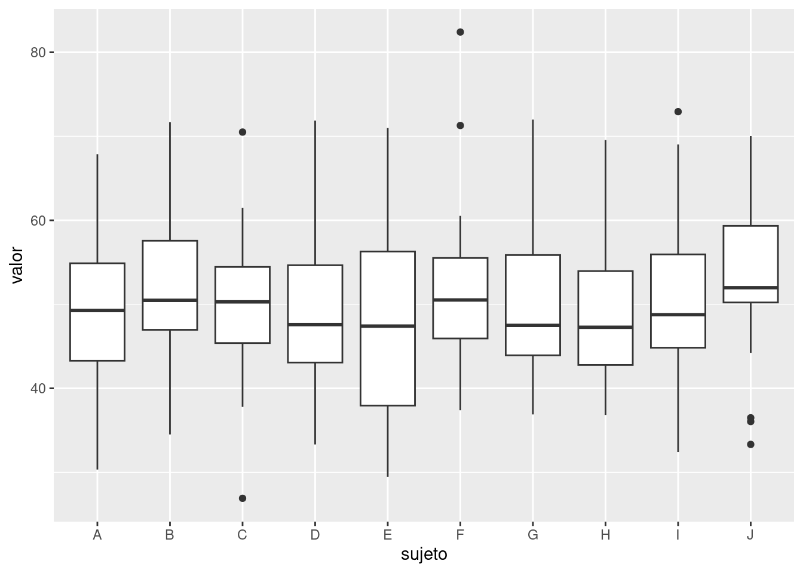
```{r}
# Añadir color por grupo
p <- ggplot(datos_simulados, aes(x = sujeto, y = valor, fill = grupo))
p + geom_boxplot()
# Configuración avanzada con etiquetas personalizadas y tema
p + geom_boxplot(outlier.colour = "red", outlier.shape = 8) +
labs(title = "Distribución de valores por sujeto y grupo",
x = "Sujeto",
y = "Valor",
fill = "Grupo") +
theme_minimal() +
theme(legend.position = "bottom",
plot.title = element_text(hjust = 0.5, face = "bold"),
axis.text.x = element_text(angle = 45, hjust = 1))
```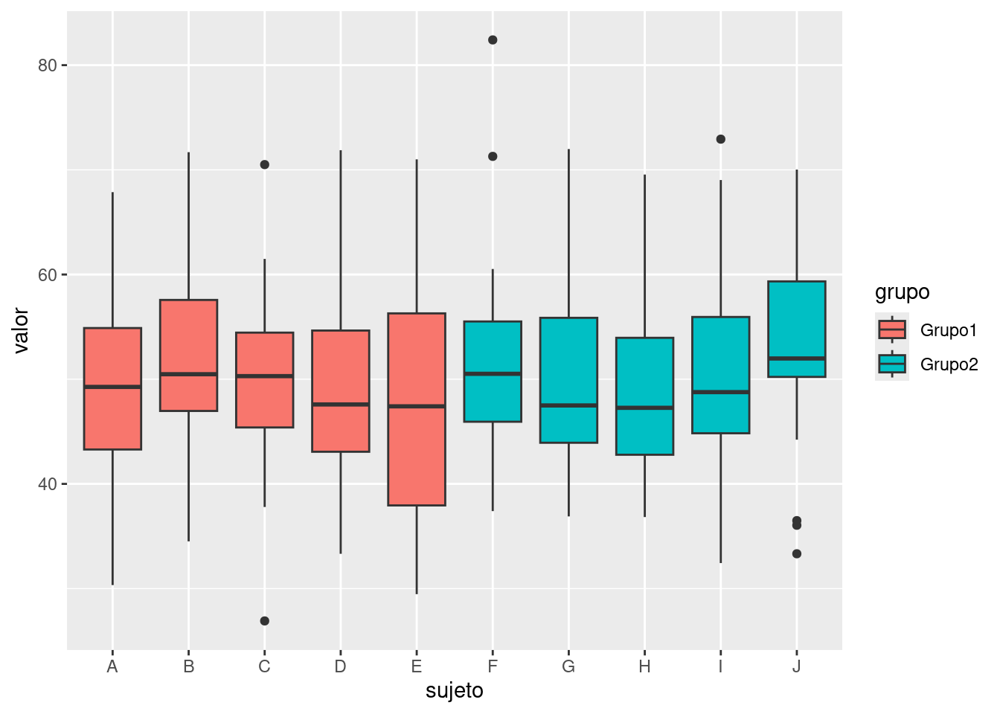
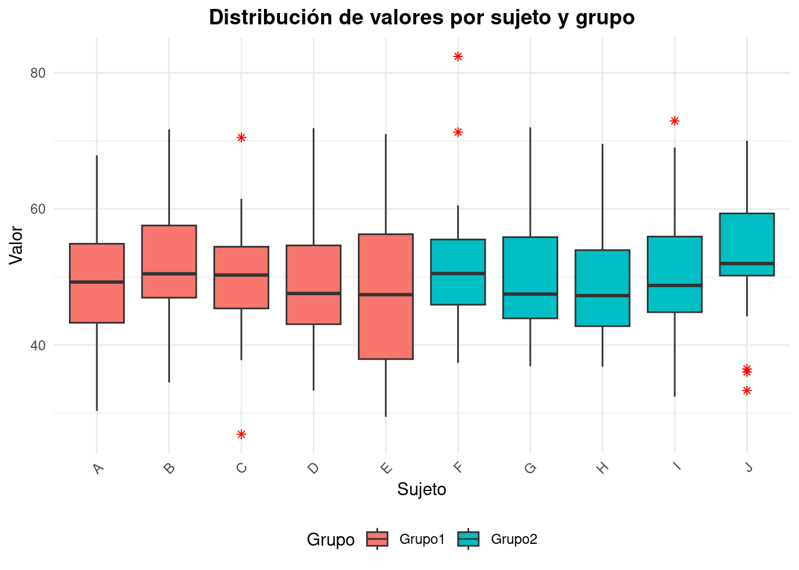
Consejo
La función ggplot() establece la base del gráfico. Puedes agregar capas adicionales usando el operador +. Cada capa añade información visual o modifica el aspecto del gráfico.
3 Configuración de geom_*()
Las funciones geom_*() definen el tipo de gráfico que queremos crear. Cada geom representa una forma diferente de visualizar los datos. Veamos algunos ejemplos comunes:
```{r}
#Gráfico de dispersión básico
ggplot(datos_simulados, aes(x = fecha, y = valor)) +
geom_point(aes(color = grupo),
alpha = 0.7, # Transparencia
size = 3, # Tamaño de los puntos
shape = 18) # Forma de los puntos
```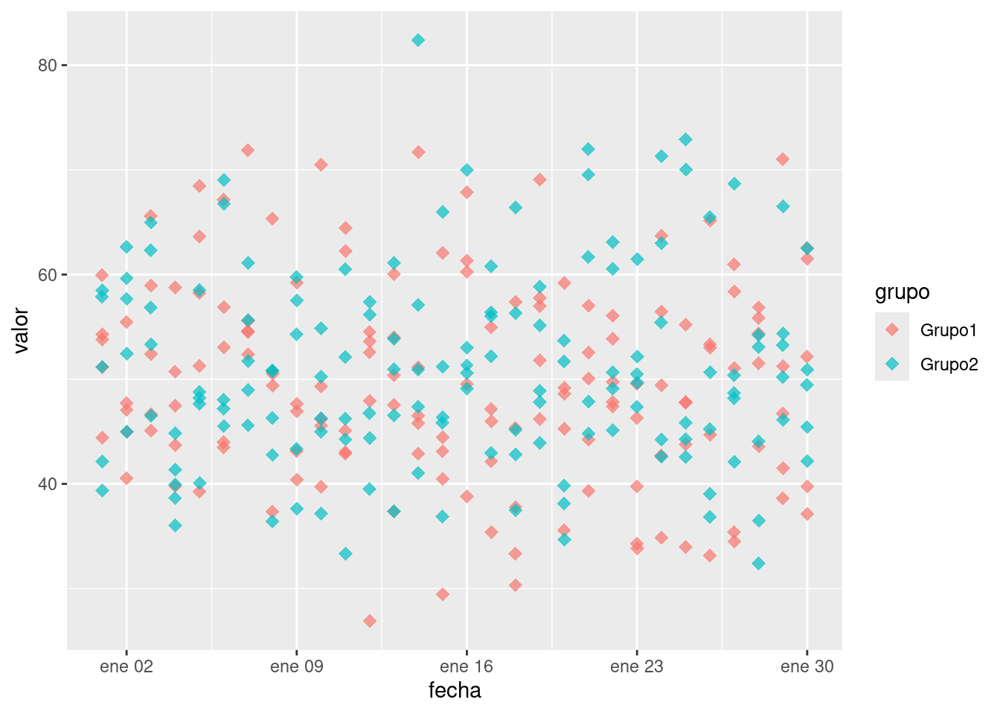
```{r}
#Gráfico de dispersión avanzado con jitter y facetas
ggplot(datos_simulados, aes(x = fecha, y = valor, color = grupo)) +
geom_jitter(width = 0, height = 0.5, alpha = 0.7) + # añadir un poco de ruido vertical a los puntos, evitando la superposición.
facet_wrap(~ sujeto, scales = "free_y") + # crear subgráficos separados para cada sujeto, facilitando la comparación
scale_color_brewer(palette = "Set1") +
theme_light() +
labs(title = "Distribución de valores por sujeto y grupo a lo largo del tiempo",
x = "Fecha",
y = "Valor") +
theme(axis.text.x = element_text(angle = 45, hjust = 1))
```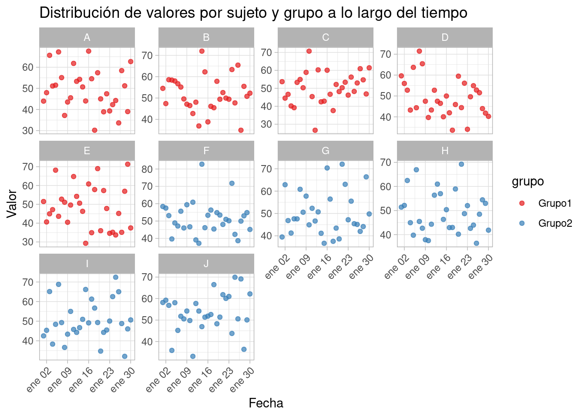
3.1 geom_bar()
```{r}
ggplot(datos_simulados, aes(x = sujeto, y = valor, fill = grupo)) +
geom_col(position = "stack", width = 0.9) + # position = dodge
scale_fill_brewer(palette = "Set3") + # Usa una paleta de colores más atractiva
scale_y_continuous() +
labs(title = "Valores por sujeto y grupo",
x = "Sujeto",
y = "Valor",
fill = "Grupo") +
theme_minimal() +
theme(axis.text.x = element_text(angle = 45, hjust = 1),
legend.position = "bottom")
#coord_flip() + # Gira el gráfico para mejor lectura con muchos sujetos
#geom_text(aes(label = valor),
# position = position_dodge(width = 0.7),
# vjust = -0.5,
# size = 3) # Añade etiquetas de valor encima de cada barra
```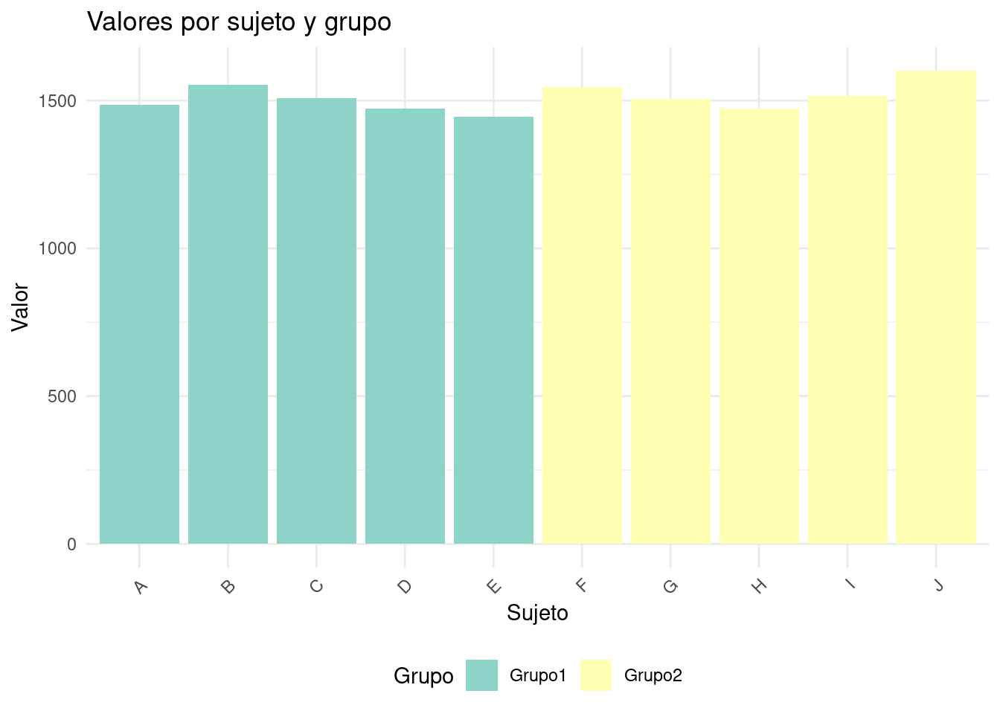
Estos ejemplos de geom_bar() muestran:
- Un gráfico de barras que compara la frecuencia de cada
sujeto, con barras separadas para cadagrupo. - Un gráfico de barras apiladas que muestra la proporción de cada
grupodentro de cadasujeto, con el eje y convertido a porcentajes.
Estos ejemplos demuestran cómo ggplot2 permite crear visualizaciones complejas y informativas con relativamente poco código. La flexibilidad del formato “long” de nuestros datos nos permite fácilmente cambiar entre diferentes tipos de visualizaciones y comparar múltiples variables. Este código incluye la introducción con la explicación detallada sobre el formato de datos “long”, así como las dos primeras secciones del manual que cubren la configuración básica de ggplot() y el uso de diferentes geom_*(). Los ejemplos utilizan el conjunto de datos simulado en formato “long” que creamos al principio.
3.2 geom_line()
La función geom_line() es especialmente útil para visualizar tendencias a lo largo del tiempo o para mostrar relaciones entre variables continuas. Es particularmente efectiva con datos de series temporales.
```{r}
# Gráfico de líneas básico
ggplot(datos_simulados, aes(x = fecha, y = valor, color = grupo)) +
geom_line() +
labs(title = "Evolución del valor a lo largo del tiempo",
x = "Fecha",
y = "Valor",
color = "Grupo") +
theme_minimal() +
theme(axis.text.x = element_text(angle = 45, hjust = 1))
```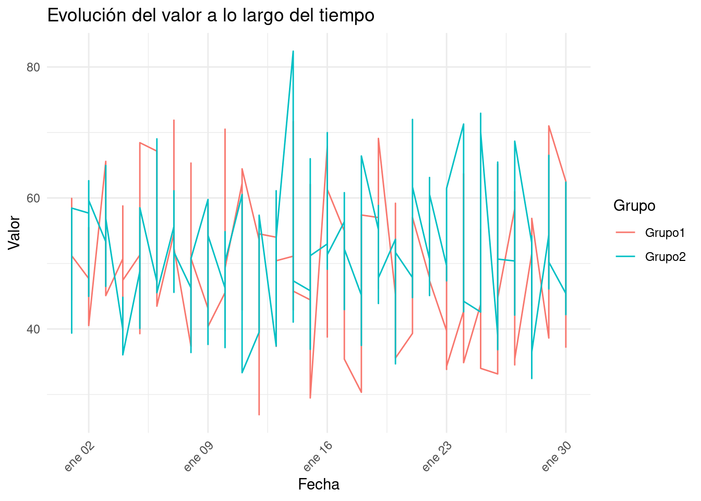
```{r}
# Gráfico de líneas con múltiples sujetos
ggplot(datos_simulados, aes(x = fecha, y = valor, color = sujeto, group = sujeto)) +
geom_line(alpha = 0.7) +
facet_wrap(~ grupo) +
labs(title = "Evolución del valor por sujeto y grupo",
x = "Fecha",
y = "Valor",
color = "Sujeto") +
theme_light() +
theme(axis.text.x = element_text(angle = 45, hjust = 1),
legend.position = "bottom")
```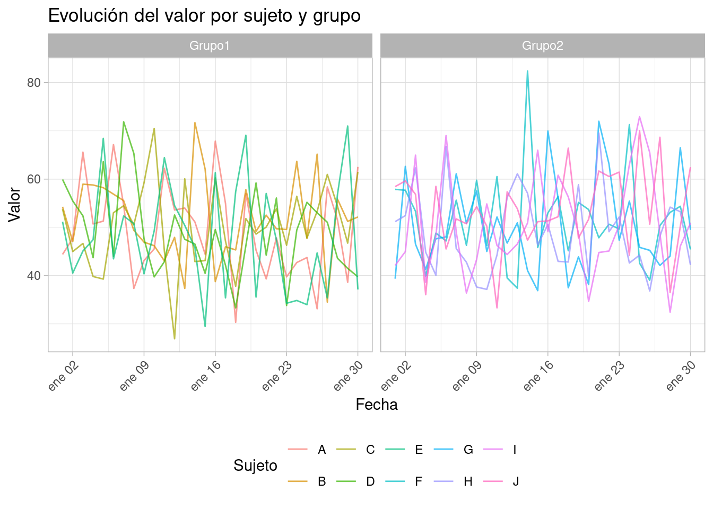
```{r}
# Gráfico de líneas con línea de tendencia
ggplot(datos_simulados, aes(x = fecha, y = valor)) +
geom_line(aes(group = sujeto), alpha = 0.3) +
geom_smooth(method = "loess", se = FALSE, color = "red") +
facet_wrap(~ grupo) +
labs(title = "Tendencia del valor a lo largo del tiempo",
subtitle = "Con línea de tendencia suavizada",
x = "Fecha",
y = "Valor") +
theme_minimal() +
theme(axis.text.x = element_text(angle = 45, hjust = 1))
```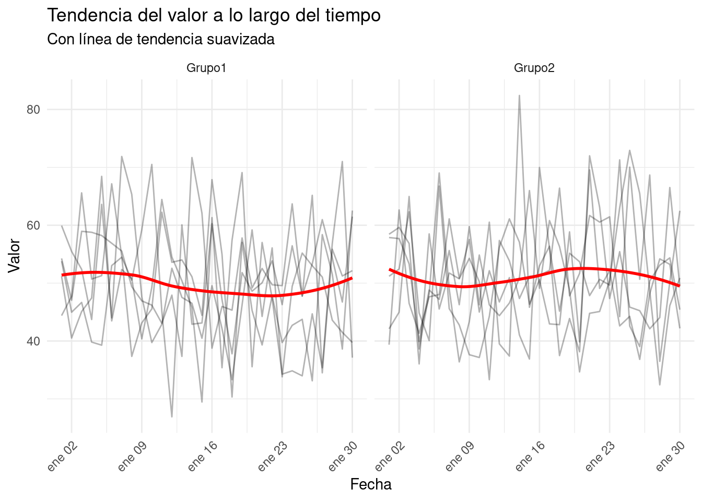
Consejo
Cuando trabajas con muchas líneas superpuestas, considera usar alpha para ajustar la transparencia. Esto puede ayudar a revelar patrones en los datos que de otra manera podrían estar ocultos.
4 Combinación de múltiples geoms
Una de las grandes fortalezas de ggplot2 es la capacidad de combinar múltiples geoms en un solo gráfico. Esto nos permite crear visualizaciones más ricas y informativas.
```{r}
# Combinar puntos y líneas
ggplot(datos_simulados, aes(x = fecha, y = valor, color = grupo)) +
geom_line(aes(group = sujeto), alpha = 0.3) +
geom_point(size = 1, alpha = 0.5) +
geom_smooth(method = "loess", se = FALSE, size = 1.5) +
labs(title = "Evolución del valor con tendencia",
x = "Fecha",
y = "Valor",
color = "Grupo") +
theme_minimal() +
theme(axis.text.x = element_text(angle = 45, hjust = 1))
```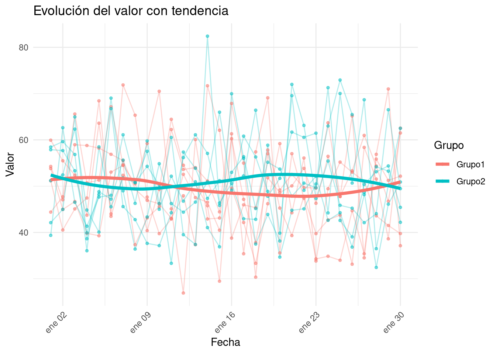
```{r}
# Combinar boxplot y puntos
ggplot(datos_simulados, aes(x = sujeto, y = valor, fill = grupo)) +
geom_boxplot(alpha = 0.7, outlier.shape = NA) +
geom_jitter(width = 0.2, alpha = 0.5, aes(color = grupo)) +
labs(title = "Distribución de valores por sujeto y grupo",
x = "Sujeto",
y = "Valor",
fill = "Grupo",
color = "Grupo") +
theme_light() +
theme(axis.text.x = element_text(angle = 45, hjust = 1),
legend.position = "bottom")
```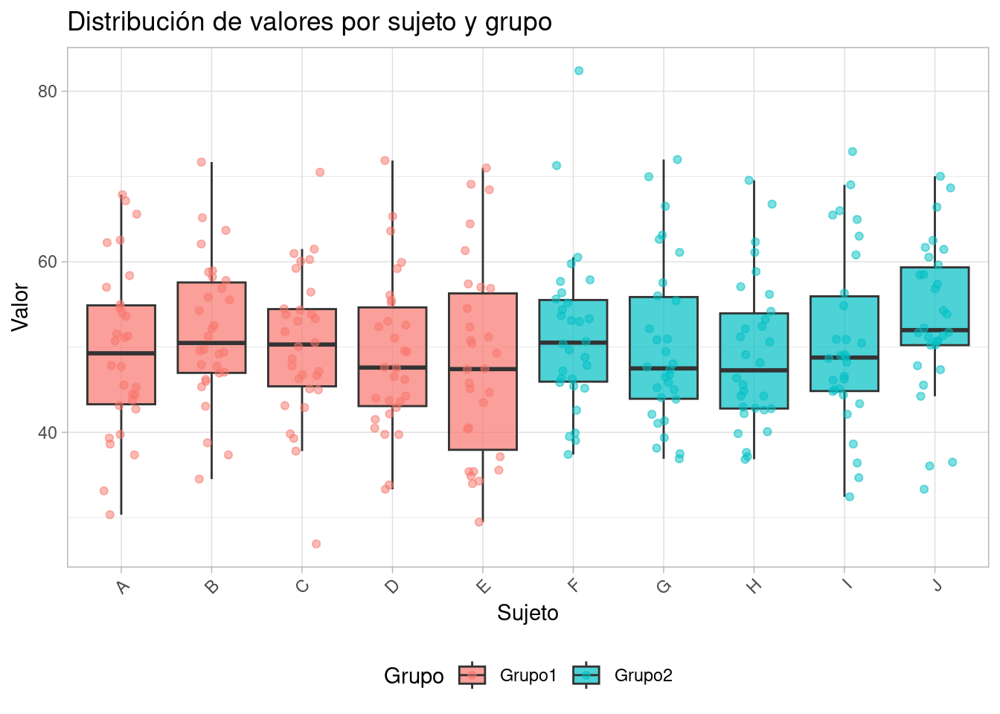
```{r}
# Gráfico de barras con puntos de datos
datos_resumen <- datos_simulados %>%
group_by(sujeto, grupo) %>%
summarise(valor_medio = mean(valor),
valor_sd = sd(valor),
.groups = 'drop')
ggplot(datos_resumen, aes(x = sujeto, y = valor_medio, fill = grupo)) +
geom_bar(stat = "identity", position = position_dodge()) +
geom_errorbar(aes(ymin = valor_medio - valor_sd,
ymax = valor_medio + valor_sd),
width = 0.2, position = position_dodge(0.9)) +
geom_point(data = datos_simulados,
aes(y = valor, group = grupo),
position = position_jitterdodge(dodge.width = 0.9),
alpha = 0.3) +
labs(title = "Valor medio por sujeto y grupo",
subtitle = "Con barras de error y puntos individuales",
x = "Sujeto",
y = "Valor",
fill = "Grupo") +
theme_minimal() +
theme(axis.text.x = element_text(angle = 45, hjust = 1),
legend.position = "bottom")
```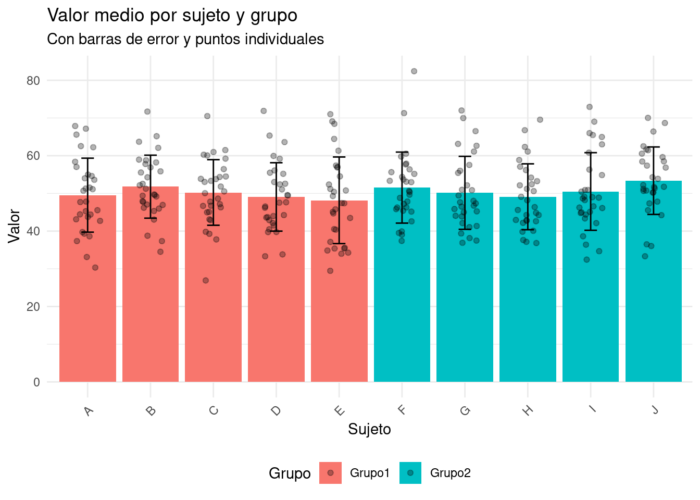
Nota sobre la combinación de geoms
La combinación de múltiples geoms puede proporcionar una visión más completa de tus datos, pero ten cuidado de no sobrecargar el gráfico. Asegúrate de que cada elemento añada información valiosa y no dificulte la interpretación.
5 Configuración de escalas
Las funciones de escala en ggplot2 nos permiten personalizar cómo se mapean los datos a elementos visuales como colores, tamaños, y posiciones en los ejes. Esto es crucial para crear visualizaciones efectivas y personalizadas.
5.1 scale_fill_*() y scale_color_*()
Estas funciones nos permiten controlar los colores utilizados en nuestros gráficos.
```{r}
# Escala de colores personalizada
ggplot(datos_simulados, aes(x = sujeto, y = valor, fill = grupo)) +
geom_boxplot() +
scale_fill_manual(values = c("Grupo1" = "#1b9e77", "Grupo2" = "#d95f02")) +
labs(title = "Distribución de valores por sujeto y grupo",
x = "Sujeto",
y = "Valor",
fill = "Grupo") +
theme_light() +
theme(axis.text.x = element_text(angle = 45, hjust = 1))
```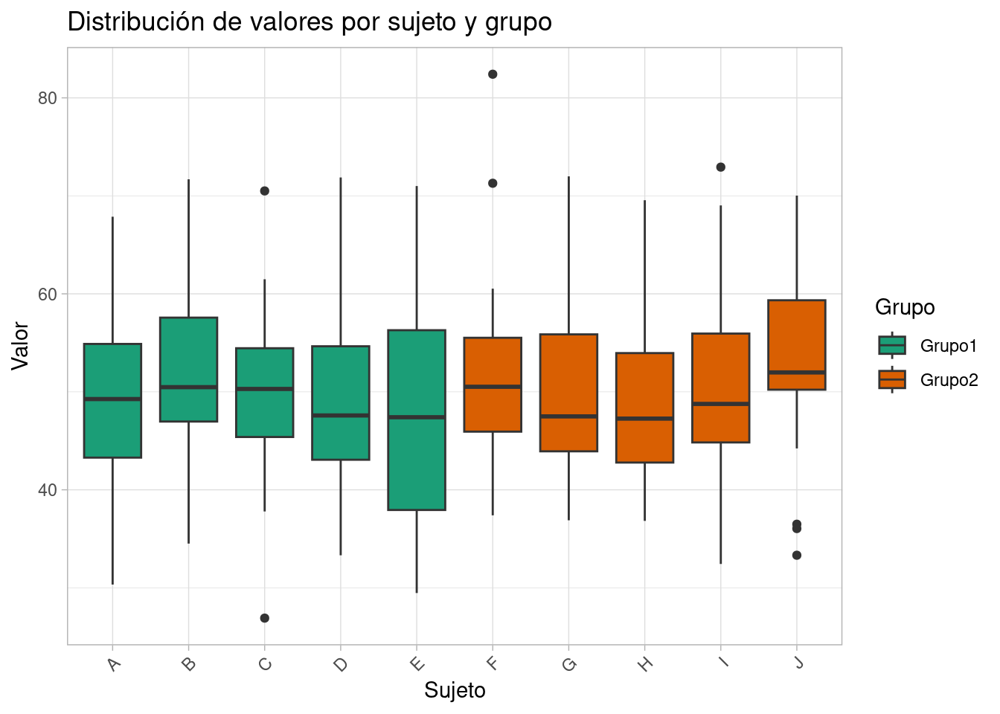
```{r}
# Escala de colores continua
ggplot(datos_simulados, aes(x = fecha, y = valor, color = valor)) +
geom_point() +
scale_color_viridis_c() +
labs(title = "Evolución del valor a lo largo del tiempo",
x = "Fecha",
y = "Valor") +
theme_minimal() +
theme(axis.text.x = element_text(angle = 45, hjust = 1))
```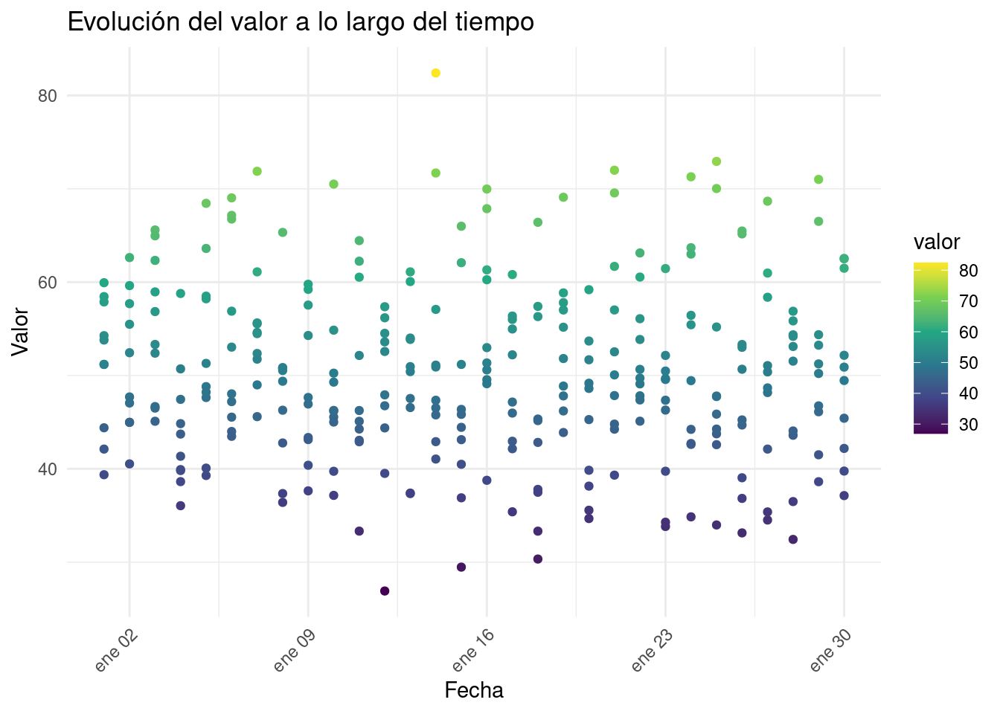
5.2 scale_x_continuous() y scale_y_continuous()
Estas funciones nos permiten personalizar las escalas de los ejes x e y para variables continuas.
```{r}
# Personalización de ejes
ggplot(datos_simulados, aes(x = fecha, y = valor)) +
geom_line(aes(group = sujeto), alpha = 0.3) +
geom_smooth(method = "loess", se = FALSE, color = "red") +
scale_x_date(date_breaks = "1 week", date_labels = "%d %b") +
scale_y_continuous(breaks = seq(0, 100, by = 10),
labels = function(x) paste0(x, " u")) +
labs(title = "Tendencia del valor a lo largo del tiempo",
x = "Fecha",
y = "Valor (unidades)") +
theme_minimal() +
theme(axis.text.x = element_text(angle = 45, hjust = 1))
```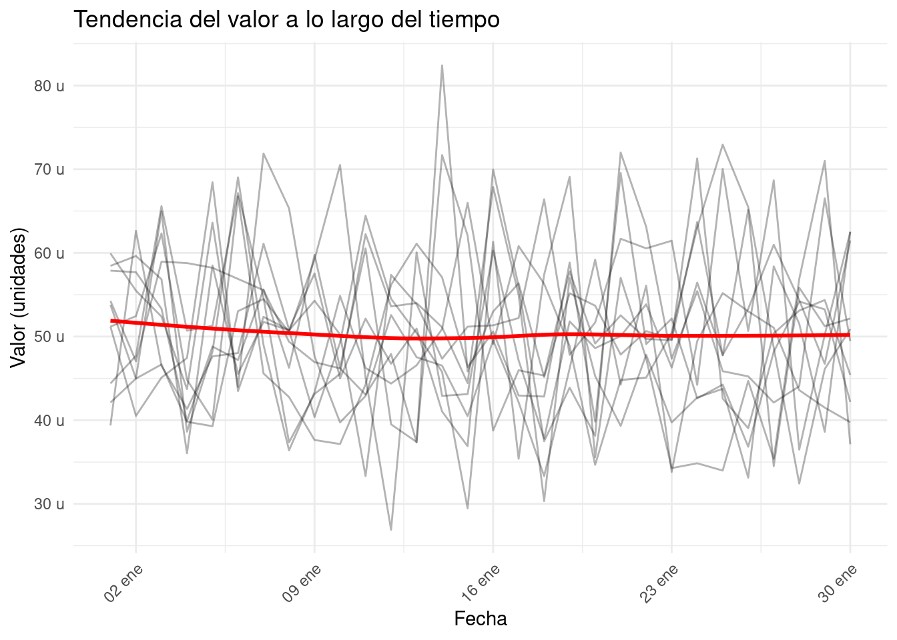
Consejo
Las funciones de escala son poderosas herramientas para mejorar la legibilidad y la estética de tus gráficos. Experimenta con diferentes opciones para encontrar la mejor representación para tus datos.
6 Facetas
Las facetas nos permiten dividir un gráfico en múltiples paneles basados en una o más variables categóricas. Esto es útil para comparar subgrupos de datos.
```{r}
# Facetas básicas
ggplot(datos_simulados, aes(x = fecha, y = valor, color = grupo)) +
geom_line() +
facet_wrap(~ sujeto) +
labs(title = "Evolución del valor por sujeto",
x = "Fecha",
y = "Valor",
color = "Grupo") +
theme_minimal() +
theme(axis.text.x = element_text(angle = 45, hjust = 1),
legend.position = "bottom")
```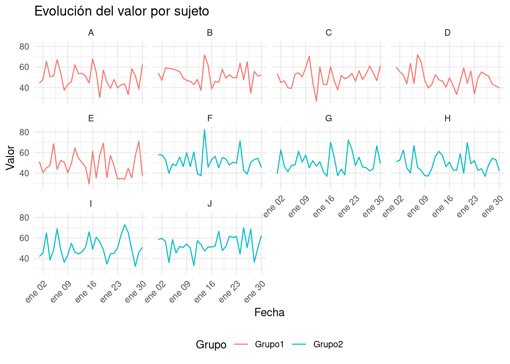
```{r}
# Facetas con escalas libres
ggplot(datos_simulados, aes(x = fecha, y = valor, color = grupo)) +
geom_line() +
facet_wrap(~ sujeto, scales = "free_y") +
labs(title = "Evolución del valor por sujeto",
subtitle = "Con escalas Y libres",
x = "Fecha",
y = "Valor",
color = "Grupo") +
theme_light() +
theme(axis.text.x = element_text(angle = 45, hjust = 1),
legend.position = "bottom")
```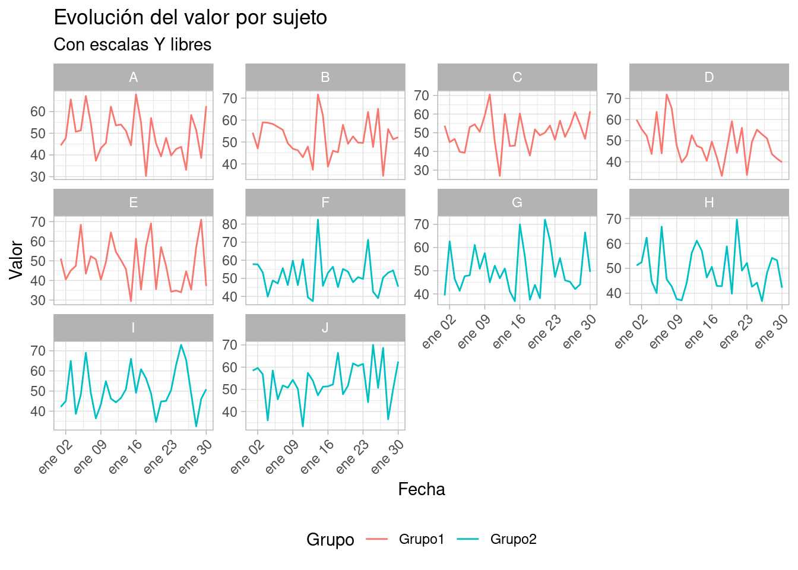
```{r}
# Facetas en grid
ggplot(datos_simulados, aes(x = fecha, y = valor)) +
geom_line() +
facet_grid(grupo ~ sujeto) +
labs(title = "Evolución del valor por sujeto y grupo",
x = "Fecha",
y = "Valor") +
theme_minimal() +
theme(axis.text.x = element_text(angle = 45, hjust = 1))
```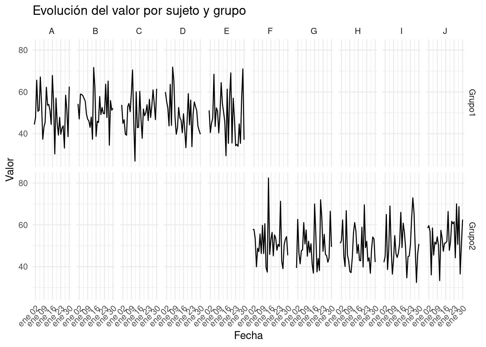
Nota sobre facetas
Las facetas son excelentes para comparar patrones entre subgrupos, pero ten cuidado con crear demasiados paneles, ya que puede dificultar la interpretación. Considera agrupar categorías o usar técnicas de visualización interactiva si tienes muchos subgrupos.
7 Serie de tiempo.
```{r}
# Crear datos de serie de tiempo
set.seed(42)
datos_tiempo <- data.frame(
fecha = seq(as.Date("2020-01-01"), by = "day", length.out = 365),
valor = cumsum(rnorm(365, mean = 0.1, sd = 1)))
``````{r}
# Gráfico de serie de tiempo básico
ggplot(datos_tiempo, aes(x = fecha, y = valor)) +
geom_line() +
labs(title = "Serie de tiempo simple",
x = "Fecha",
y = "Valor acumulado")
```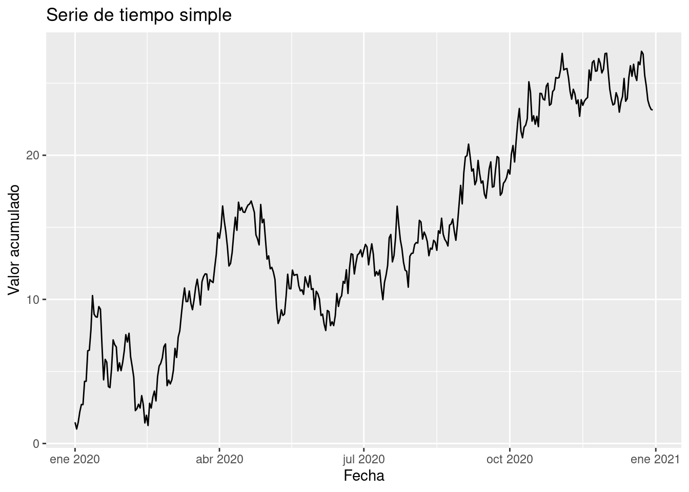
```{r}
# Gráfico de serie de tiempo avanzado
ggplot(datos_tiempo, aes(x = fecha, y = valor)) +
geom_line(color = "steelblue") +
geom_smooth(method = "loess", se = TRUE, color = "red", fill = "pink") +
scale_x_date(date_breaks = "2 month", date_labels = "%b %Y") +
labs(title = "Serie de tiempo con tendencia suavizada",
x = "Fecha",
y = "Valor acumulado") +
theme_minimal() +
theme(axis.text.x = element_text(angle = 45, hjust = 1))
```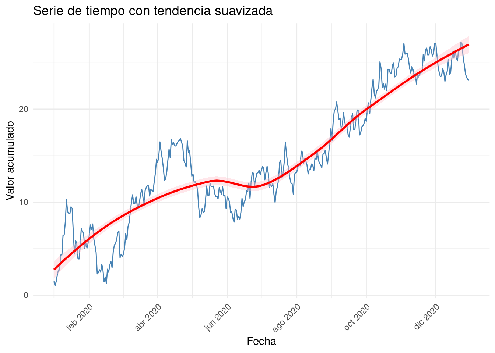
8 Temas personalizados
Los temas en ggplot2 nos permiten personalizar el aspecto general de nuestros gráficos. Podemos crear temas personalizados para mantener una apariencia consistente en todas nuestras visualizaciones.
```{r}
# Definir un tema personalizado
tema_personalizado <- theme_minimal() +
theme(
plot.title = element_text(face = "bold", size = 16, hjust = 0.5),
plot.subtitle = element_text(face = "italic", size = 12, hjust = 0.5),
axis.title = element_text(face = "bold"),
axis.text = element_text(size = 8),
legend.title = element_text(face = "bold"),
legend.position = "bottom",
panel.grid.major = element_line(color = "gray90"),
panel.grid.minor = element_blank(),
strip.background = element_rect(fill = "lightblue", color = NA),
strip.text = element_text(face = "bold", color = "navy")
)
# Aplicar el tema personalizado
ggplot(datos_simulados, aes(x = fecha, y = valor, color = grupo)) +
geom_line() +
facet_wrap(~ sujeto) +
labs(title = "Evolución del valor por sujeto y grupo",
subtitle = "Usando un tema personalizado",
x = "Fecha",
y = "Valor",
color = "Grupo") +
tema_personalizado
```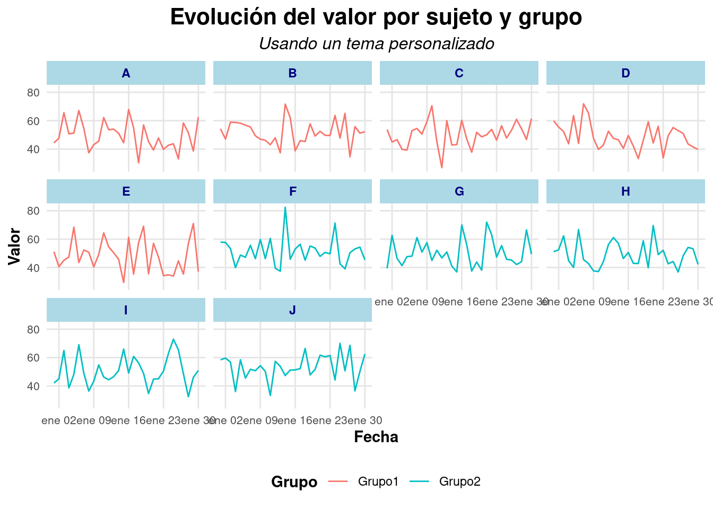
Consejo
Crear un tema personalizado es útil cuando necesitas mantener una apariencia consistente en múltiples gráficos, especialmente en informes o dashboards.
9 Gráficos estadísticos
ggplot2 ofrece varias funciones para crear gráficos estadísticos que pueden ayudarnos a entender mejor la distribución y las relaciones en nuestros datos.
9.1 Histogramas y densidades
```{r}
# Histograma básico
ggplot(datos_simulados, aes(x = valor)) +
geom_histogram(binwidth = 5, fill = "skyblue", color = "black") +
labs(title = "Distribución de valores",
x = "Valor",
y = "Frecuencia") +
theme_minimal()
```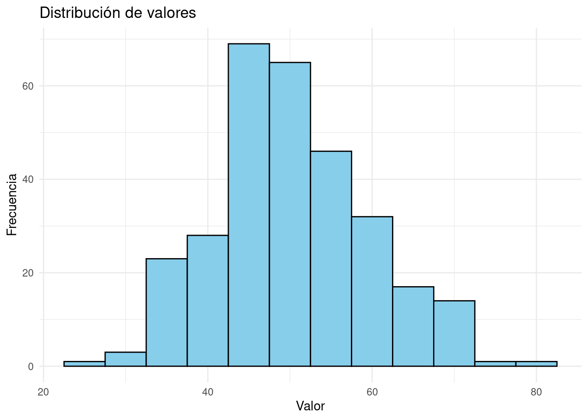
```{r}
# Densidad por grupo
ggplot(datos_simulados, aes(x = valor, fill = grupo)) +
geom_density(alpha = 0.7) +
labs(title = "Distribución de valores por grupo",
x = "Valor",
y = "Densidad",
fill = "Grupo") +
theme_light()
```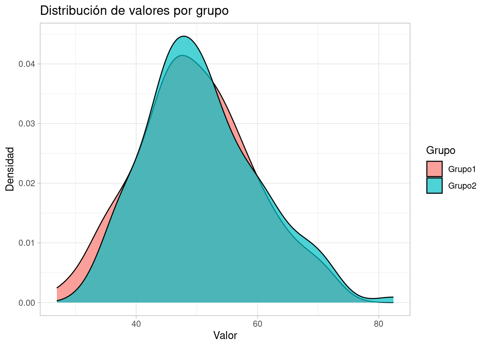
```{r}
# Histograma y densidad combinados
ggplot(datos_simulados, aes(x = valor)) +
geom_histogram(aes(y = ..density..), binwidth = 5, fill = "lightblue", color = "black") +
geom_density(color = "red", size = 1) +
labs(title = "Distribución de valores con curva de densidad",
x = "Valor",
y = "Densidad") +
theme_minimal()
```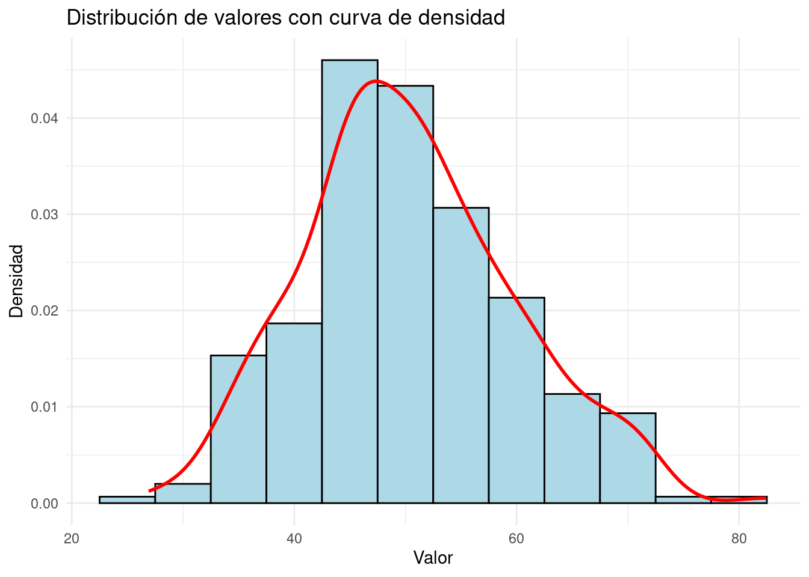
9.2 Gráficos de violín y boxplots
```{r}
# Gráfico de violín
ggplot(datos_simulados, aes(x = sujeto, y = valor, fill = grupo)) +
geom_violin() +
labs(title = "Distribución de valores por sujeto y grupo",
x = "Sujeto",
y = "Valor",
fill = "Grupo") +
theme_minimal() +
theme(axis.text.x = element_text(angle = 45, hjust = 1))
```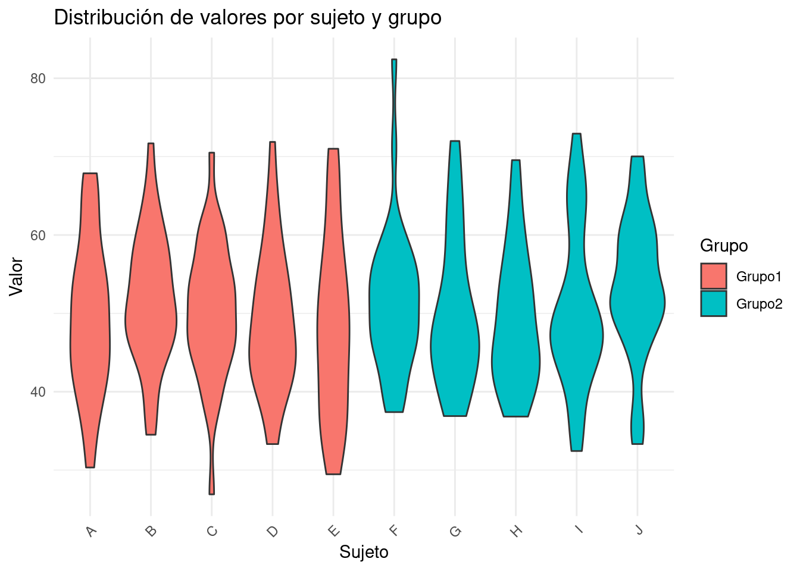
```{r}
# Boxplot con puntos
ggplot(datos_simulados, aes(x = sujeto, y = valor, fill = grupo)) +
geom_boxplot(outlier.shape = NA) +
geom_jitter(width = 0.2, alpha = 0.5) +
labs(title = "Distribución de valores por sujeto y grupo",
x = "Sujeto",
y = "Valor",
fill = "Grupo") +
theme_light() +
theme(axis.text.x = element_text(angle = 45, hjust = 1))
```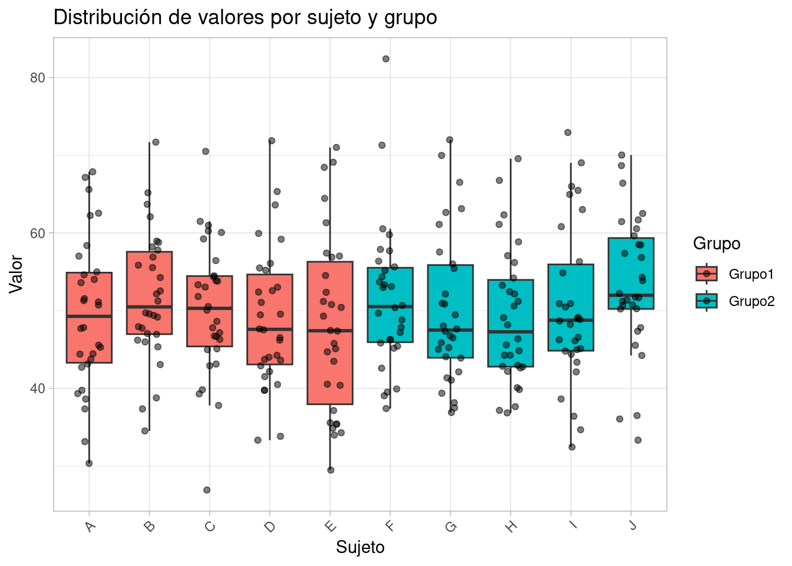
```{r}
# Combinación de violín y boxplot
ggplot(datos_simulados, aes(x = sujeto, y = valor, fill = grupo)) +
geom_violin(alpha = 0.5) +
geom_boxplot(width = 0.1, color = "black", alpha = 0.8) +
labs(title = "Distribución de valores por sujeto y grupo",
subtitle = "Combinación de gráfico de violín y boxplot",
x = "Sujeto",
y = "Valor",
fill = "Grupo") +
theme_minimal() +
theme(axis.text.x = element_text(angle = 45, hjust = 1))
```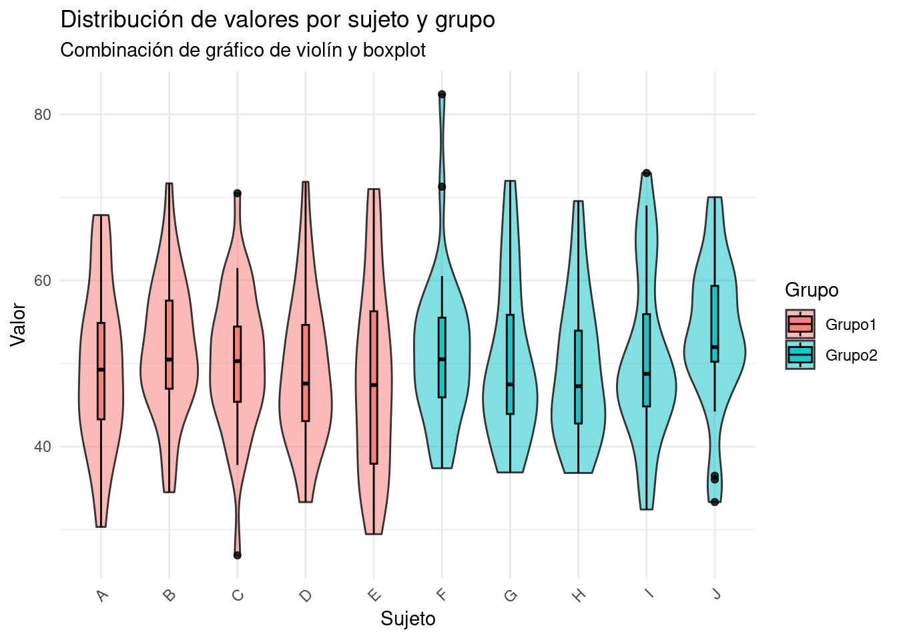
Consejo
Los gráficos de violín son particularmente útiles cuando tienes una gran cantidad de datos, ya que muestran la densidad de la distribución. Combinarlos con boxplots puede proporcionar una visión completa de la distribución, incluyendo la mediana y los cuartiles.
10 Gráficos de correlación
Los gráficos de correlación son útiles para explorar relaciones entre variables numéricas.
```{r}
#install.packages("GGally")
library(GGally)
library(reshape2)
set.seed(123)
datos_simulados <- datos_simulados %>%
mutate(
valor_continuo2 = valor + rnorm(n(), mean = 0, sd = 0.5),
valor_continuo3 = valor + rnorm(n(), mean = 0, sd = 1)
)
``````{r}
# Gráfico de dispersión básico
ggplot(datos_simulados, aes(x = valor_continuo2, y = valor_continuo3)) +
geom_point(alpha = 0.5) +
geom_smooth(method = "lm", se = FALSE, color = "red") +
labs(title = "Relación entre Valor Continuo y Valor Continuo 2",
x = "Valor Continuo",
y = "Valor Continuo 2") +
theme_minimal()
```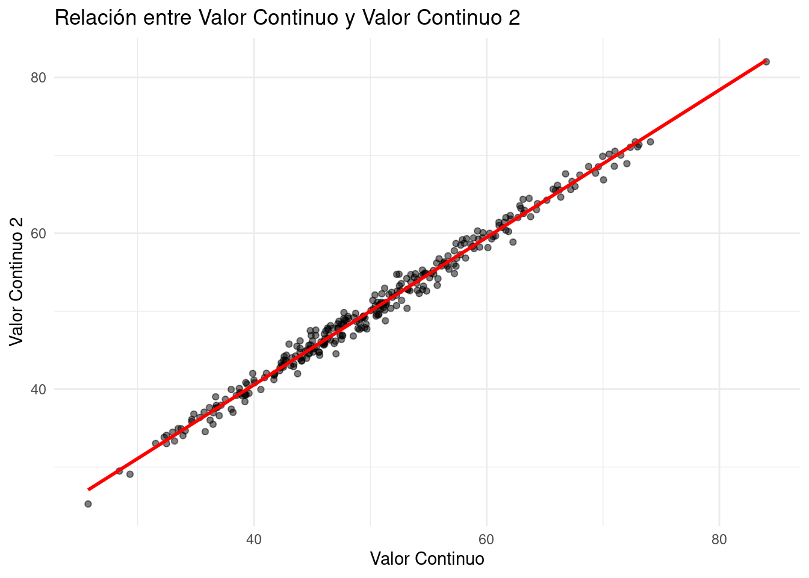
```{r}
# Matriz de gráficos de dispersión
datos_simulados %>%
select(valor, valor_continuo2, valor_continuo3, grupo) %>%
ggpairs(aes(color = grupo, alpha = 0.5)) +
labs(title = "Matriz de gráficos de dispersión") +
theme_minimal()
```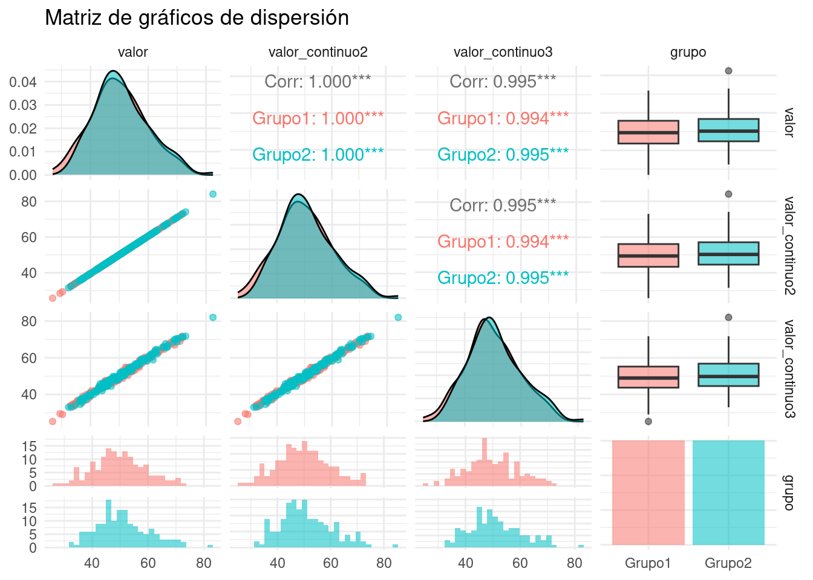
```{r}
# Heatmap de correlación
datos_simulados %>%
select(valor, valor_continuo2, valor_continuo3) %>%
cor() %>%
as_tibble(rownames = "variable") %>%
pivot_longer(-variable, names_to = "variable2", values_to = "correlation") %>%
ggplot(aes(x = variable, y = variable2, fill = correlation)) +
geom_tile() +
scale_fill_gradient2(low = "blue", high = "red", mid = "white", midpoint = 0) +
geom_text(aes(label = round(correlation, 2)), color = "black") +
labs(title = "Heatmap de correlación",
x = "",
y = "") +
theme_minimal() +
theme(axis.text.x = element_text(angle = 45, hjust = 1))
```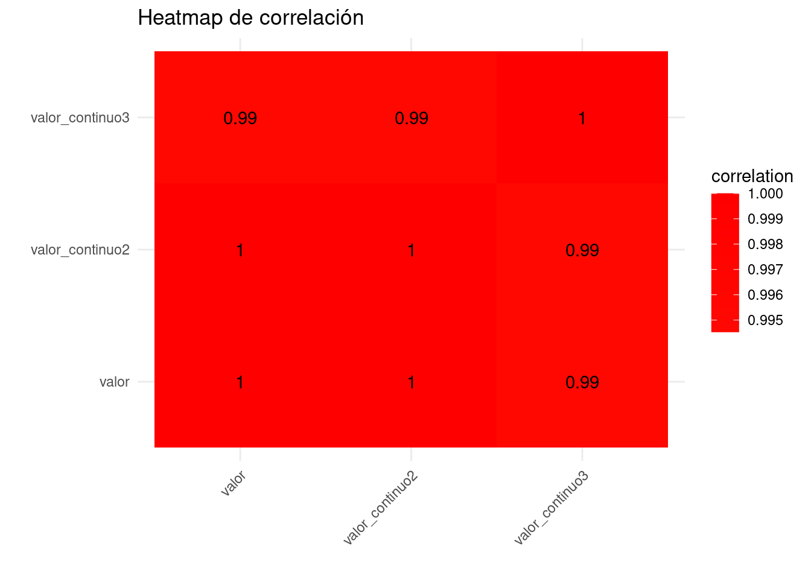
11 Gráficos de series temporales avanzados
Para datos de series temporales, podemos crear visualizaciones más avanzadas que nos ayuden a entender patrones y tendencias a lo largo del tiempo. Utilizaremos el enfoque tidyverse para manipular y visualizar nuestros datos.
```{r}
library(lubridate)
# Agregar datos por semana
datos_semanales <- datos_simulados %>%
mutate(semana = floor_date(fecha, "week")) %>%
group_by(semana, grupo) %>%
summarise(
valor_medio = mean(valor),
valor_sd = sd(valor),
.groups = 'drop'
)
``````{r}
# Gráfico de líneas con bandas de error
ggplot(datos_semanales, aes(x = semana, y = valor_medio, color = grupo, fill = grupo)) +
geom_line() +
geom_ribbon(aes(ymin = valor_medio - valor_sd,
ymax = valor_medio + valor_sd),
alpha = 0.2) +
labs(title = "Evolución semanal del valor medio por grupo",
subtitle = "Con bandas de desviación estándar",
x = "Semana",
y = "Valor medio",
color = "Grupo",
fill = "Grupo") +
theme_minimal() +
theme(axis.text.x = element_text(angle = 45, hjust = 1))
```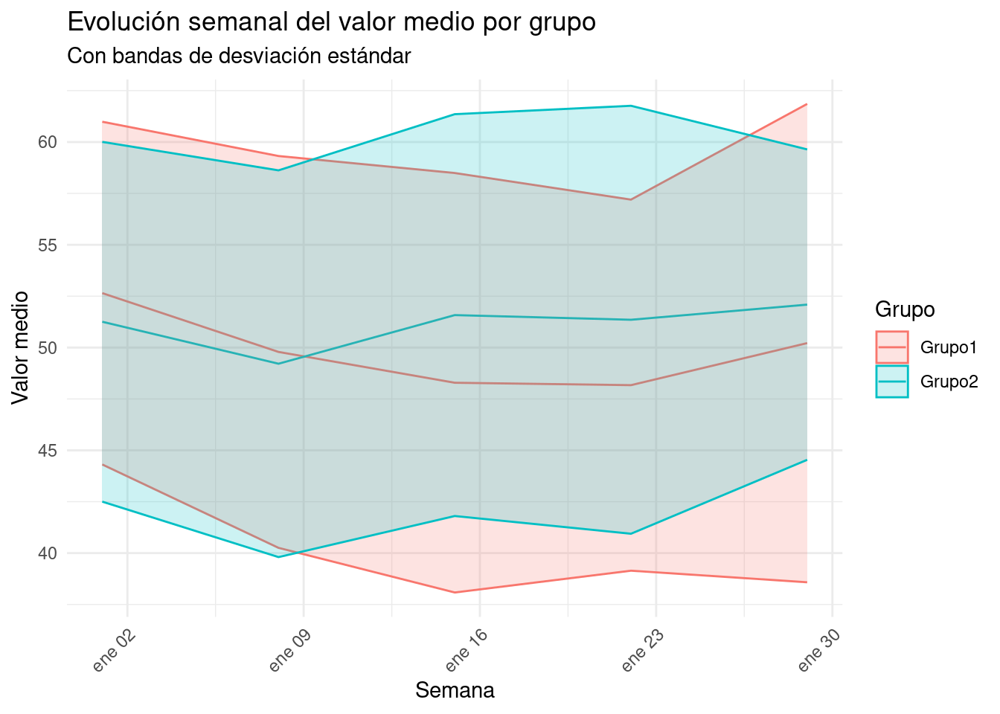
```{r}
# Gráfico de calor temporal
ggplot(datos_simulados, aes(x = fecha, y = grupo, fill = valor)) +
geom_tile() +
scale_fill_viridis_c() +
labs(title = "Heatmap temporal de valores por categoría",
x = "Fecha",
y = "Categoría",
fill = "Valor") +
theme_minimal() +
theme(axis.text.x = element_text(angle = 45, hjust = 1))
```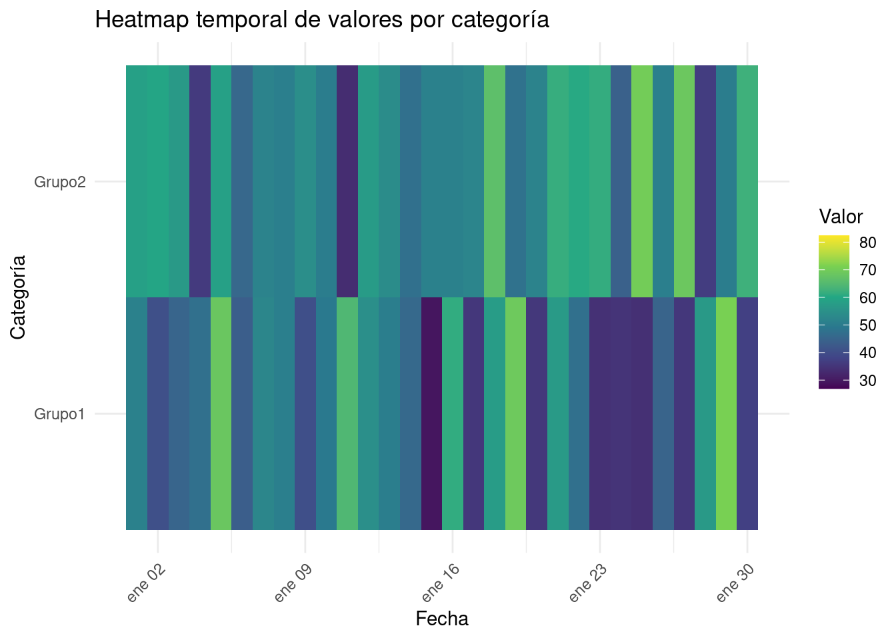
```{r}
# Gráfico de áreas apiladas
datos_simulados %>%
group_by(fecha, grupo) %>%
summarise(valor_medio = mean(valor), .groups = 'drop') %>%
ggplot(aes(x = fecha, y = valor_medio, fill = grupo)) +
geom_area() +
labs(title = "Evolución del valor medio por categoría",
x = "Fecha",
y = "Valor medio",
fill = "Categoría") +
theme_minimal() +
theme(axis.text.x = element_text(angle = 45, hjust = 1))
```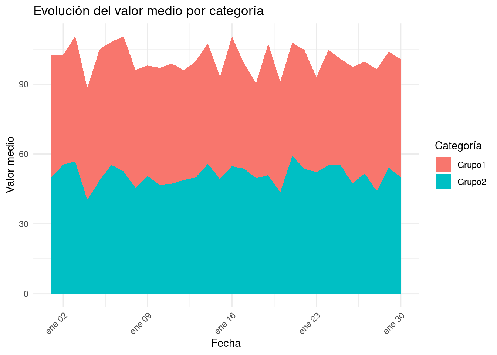
```{r}
# Gráfico de líneas con facetas
datos_simulados %>%
ggplot(aes(x = fecha, y = valor, color = grupo)) +
geom_line() +
facet_wrap(~ grupo, scales = "free_y") +
labs(title = "Evolución del valor continuo por categoría y grupo",
x = "Fecha",
y = "Valor continuo",
color = "Grupo") +
theme_minimal() +
theme(axis.text.x = element_text(angle = 45, hjust = 1))
```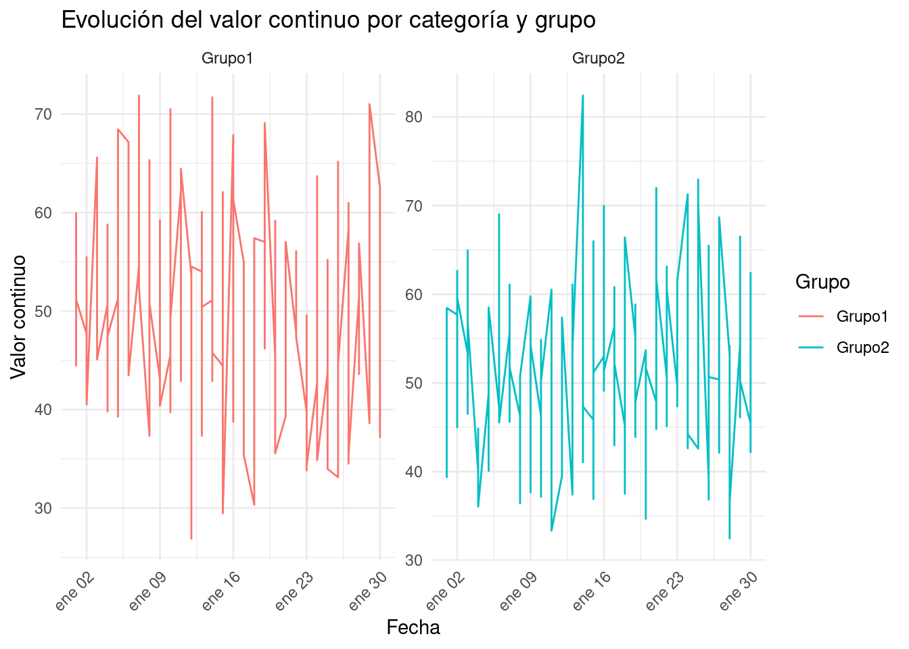
```{r}
# Gráfico de calendario
#install.packages("ggTimeSeries")
library(ggTimeSeries)
# Preparar los datos
datos_calendario <- datos_simulados %>%
mutate(
year = year(fecha),
month = month(fecha),
day = day(fecha),
weekday = wday(fecha, label = TRUE, abbr = FALSE),
week = week(fecha)
) %>%
group_by(year, month, day, weekday, week) %>%
summarise(valor_medio = mean(valor), .groups = 'drop')
``````{r}
# Crear el gráfico de calendario
ggplot(datos_calendario, aes(x = weekday, y = week, fill = valor_medio)) +
geom_tile(color = "white") +
facet_wrap(~month, ncol = 3, scales = "free") +
scale_fill_viridis_c() +
labs(title = "Heatmap de calendario del valor medio",
x = "Día de la semana",
y = "Semana del mes",
fill = "Valor medio") +
theme_minimal() +
theme(axis.text.x = element_text(angle = 90, hjust = 1))
```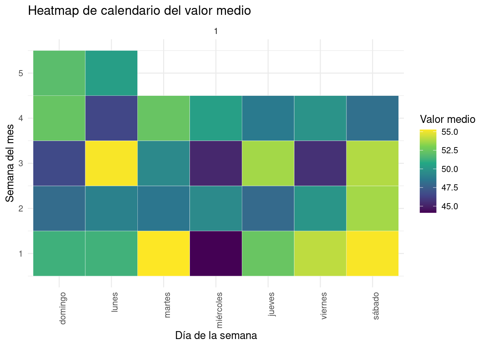
Nota sobre gráficos de series temporales
Cuando trabajes con series temporales, considera: - Agregar los datos por períodos relevantes (por ejemplo, semanas o meses) para reducir el ruido. - Usar técnicas de suavizado para resaltar tendencias generales. - Visualizar la incertidumbre o variabilidad de los datos, como hicimos con las bandas de error. - Explorar diferentes formas de representar el tiempo (lineal, cíclico, etc.) según la naturaleza de tus datos. - Utilizar facetas o colores para comparar múltiples series o categorías simultáneamente.
12 Personalización avanzada de gráficos
Además de los gráficos básicos y estadísticos, ggplot2 ofrece una amplia gama de opciones para personalizar y mejorar nuestras visualizaciones. En esta sección, exploraremos algunas técnicas avanzadas de personalización.
12.1 Temas personalizados
Los temas en ggplot2 nos permiten controlar el aspecto general de nuestros gráficos. Podemos crear nuestros propios temas personalizados para mantener un estilo consistente en todas nuestras visualizaciones.
```{r}
# Definir un tema personalizado
tema_personalizado <- theme_minimal() +
theme(
plot.title = element_text(face = "bold", size = 16, hjust = 0.5),
plot.subtitle = element_text(face = "italic", size = 12, hjust = 0.5),
axis.title = element_text(face = "bold"),
axis.text = element_text(size = 8),
legend.title = element_text(face = "bold"),
legend.position = "bottom",
panel.grid.major = element_line(color = "gray90"),
panel.grid.minor = element_blank(),
strip.background = element_rect(fill = "lightblue", color = NA),
strip.text = element_text(face = "bold", color = "navy")
)
# Aplicar el tema personalizado
ggplot(datos_simulados, aes(x = fecha, y = valor, color = grupo)) +
geom_line() +
labs(title = "Evolución del valor continuo por grupo",
subtitle = "Usando un tema personalizado",
x = "Fecha",
y = "Valor continuo",
color = "Grupo") +
tema_personalizado
```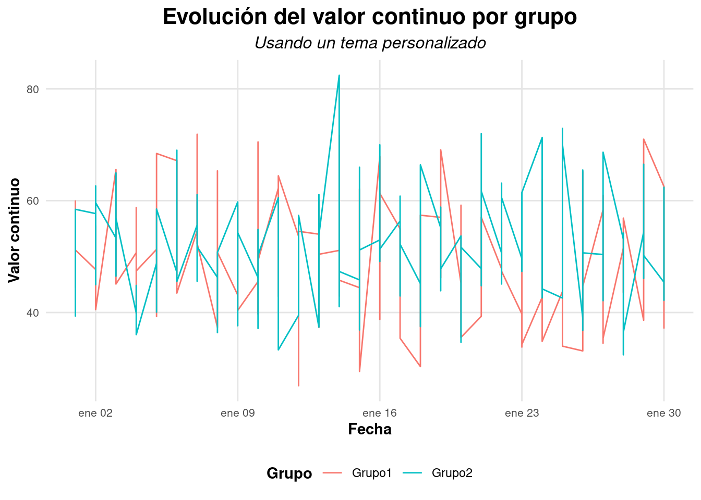
12.2 Escalas personalizadas
Las escalas nos permiten controlar cómo se mapean los datos a elementos visuales como colores, tamaños y posiciones.
```{r}
# Escala de colores personalizada
ggplot(datos_simulados, aes(x = fecha, y = valor, color = grupo)) +
geom_line() +
scale_color_manual(values = c("Grupo1" = "#1b9e77", "Grupo2" = "#d95f02")) +
labs(title = "Evolución del valor continuo por grupo",
x = "Fecha",
y = "Valor continuo",
color = "Grupo") +
theme_minimal()
```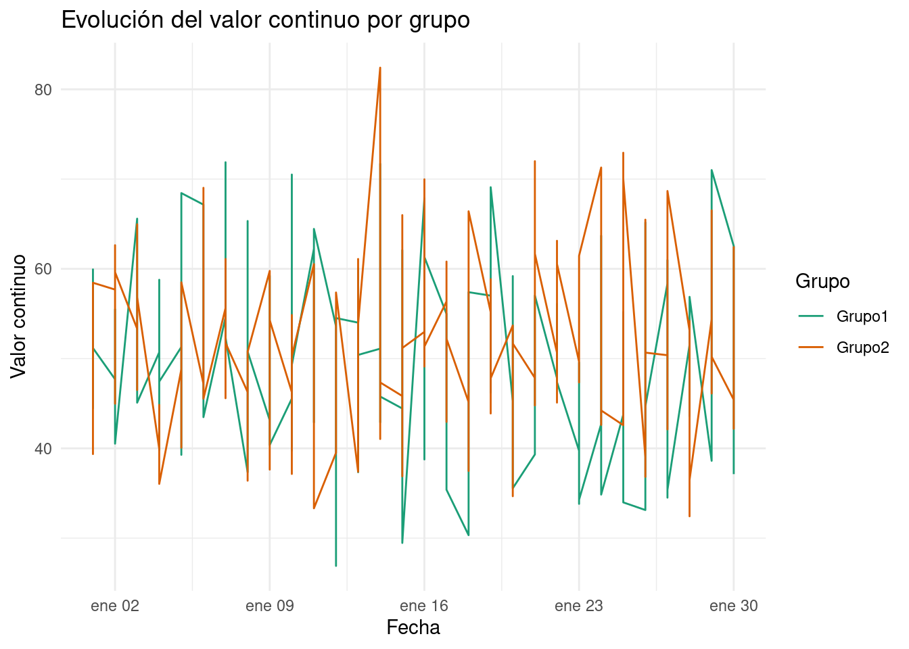
12.3 Composición de múltiples gráficos
A veces, es útil combinar múltiples gráficos en una sola figura. Podemos usar el paquete patchwork para lograr esto fácilmente.
```{r}
library(patchwork)
# Crear gráficos individuales
g1 <- ggplot(datos_simulados, aes(x = valor, fill = grupo)) +
geom_density(alpha = 0.7) +
labs(title = "Distribución de valores", x = "Valor continuo", y = "Densidad")
g2 <- ggplot(datos_simulados, aes(x = fecha, y = valor, color = grupo)) +
geom_line() +
labs(title = "Evolución temporal", x = "Fecha", y = "Valor continuo")
g3 <- ggplot(datos_simulados, aes(x = grupo, y = valor)) +
geom_boxplot() +
labs(title = "Comparación de grupos", x = "Grupo", y = "Valor continuo")
# Combinar los gráficos
(g1 + g2) / g3 +
plot_annotation(title = "Análisis multidimensional de los datos simulados",
theme = theme(plot.title = element_text(size = 16, face = "bold")))
```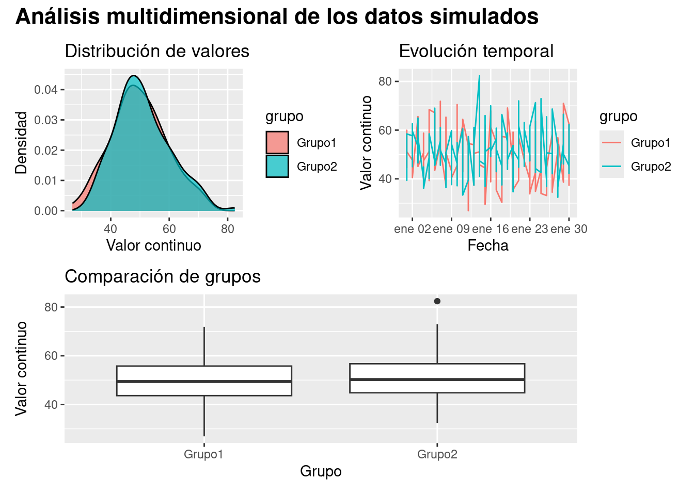
Consejo de personalización
Recuerda que la personalización excesiva puede a veces dificultar la interpretación de los datos. Busca un equilibrio entre estética y claridad, asegurándote de que tus personalizaciones mejoren la comprensión de los datos, no la obstaculicen.
12.4 Anotaciones y etiquetas
Podemos añadir anotaciones y etiquetas a nuestros gráficos para resaltar puntos importantes o proporcionar contexto adicional.
```{r}
#Calcular el punto máximo para cada grupo
puntos_maximos <- datos_simulados %>%
group_by(grupo) %>%
slice_max(order_by = valor, n = 1)
ggplot(datos_simulados, aes(x = fecha, y = valor, color = grupo)) +
geom_line() +
geom_point(data = puntos_maximos, size = 3) +
geom_text(data = puntos_maximos,
aes(label = round(valor, 2)),
vjust = -1, hjust = 1) +
labs(title = "Evolución del valor continuo por grupo",
subtitle = "Con puntos máximos etiquetados",
x = "Fecha",
y = "Valor continuo",
color = "Grupo") +
theme_minimal() +
theme(axis.text.x = element_text(angle = 45, hjust = 1))
```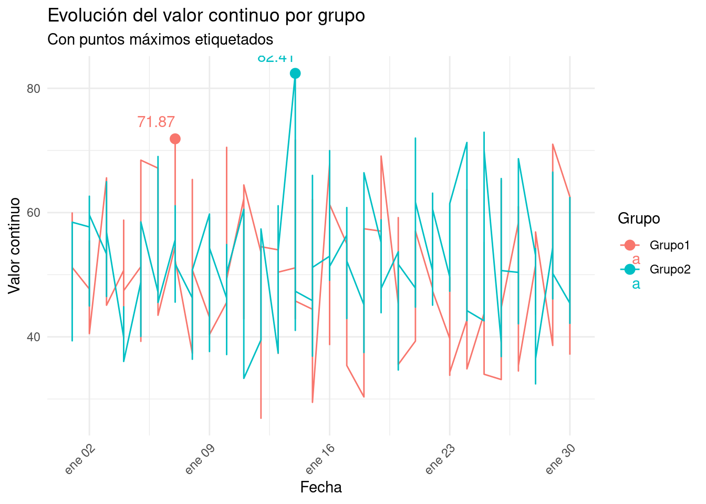
13 Visualización de datos geoespaciales
ggplot2 también puede ser utilizado para crear mapas y visualizar datos geoespaciales. En esta sección, exploraremos cómo crear mapas básicos y superponer datos en ellos.
```{r}
library(maps)
# Cargar datos de mapa mundial
world <- map_data("world")
# Crear un mapa básico
ggplot(world, aes(x = long, y = lat, group = group)) +
geom_polygon(fill = "lightgray", color = "white") +
coord_fixed(1.3) +
theme_void() +
labs(title = "Mapa Mundial Básico")
```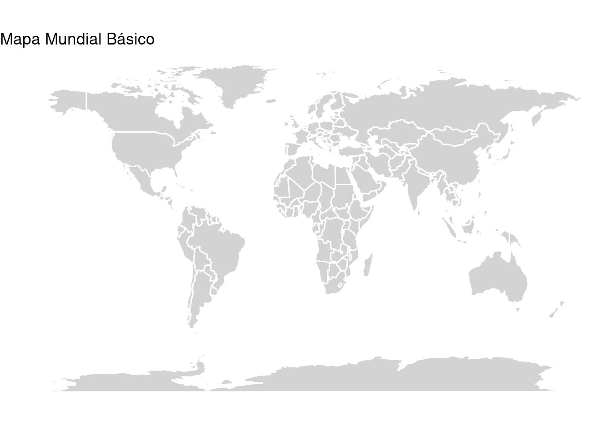
```{r}
# Supongamos que tenemos algunos datos de ciudades
ciudades <- data.frame(
nombre = c("Nueva York", "Londres", "Tokio", "Sídney"),
lat = c(40.7128, 51.5074, 35.6762, -33.8688),
long = c(-74.0060, -0.1278, 139.6503, 151.2093),
poblacion = c(8.4, 8.9, 13.9, 5.3)
)
# Añadir puntos al mapa
ggplot() +
geom_polygon(data = world, aes(x = long, y = lat, group = group),
fill = "lightgray", color = "white") +
geom_point(data = ciudades, aes(x = long, y = lat, size = poblacion),
color = "red", alpha = 0.7) +
coord_fixed(1.3) +
scale_size_continuous(range = c(3, 10)) +
theme_void() +
labs(title = "Ciudades Principales del Mundo",
size = "Población (millones)")
```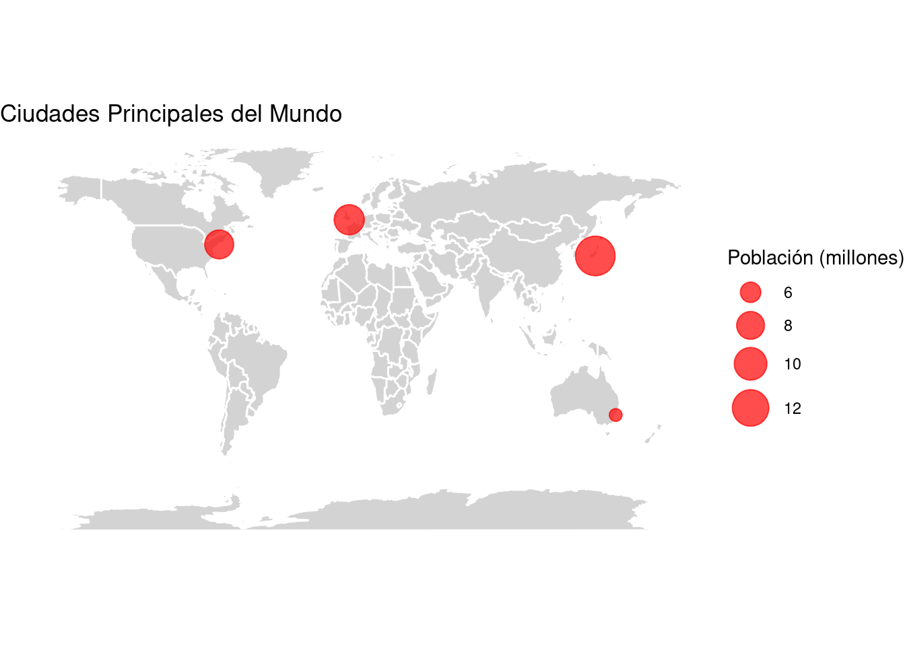
14 Visualización interactiva con plotly
Aunque ggplot2 produce gráficos estáticos, podemos convertirlos en interactivos utilizando el paquete plotly.
```{r}
library(plotly)
# Crear un gráfico ggplot2
p <- ggplot(datos_simulados, aes(x = fecha, y = valor, color = grupo)) +
geom_line() +
labs(title = "Evolución del valor continuo por grupo",
x = "Fecha",
y = "Valor continuo",
color = "Grupo")
# Convertir a gráfico interactivo
ggplotly(p)
```15 Animaciones con gganimate
El paquete gganimate nos permite crear animaciones a partir de gráficos ggplot2.
```{r}
##install.packages("gganimate")
#library(gganimate)
#
## Crear una animación
#p <- ggplot(datos_simulados, aes(x = valor, y = valor_continuo2, color = grupo)) +
# geom_point() +
# labs(title = "Evolución de valores continuos",
# x = "Valor continuo 1",
# y = "Valor continuo 2") +
# transition_time(fecha) +
# ease_aes('linear')
#
## Mostrar la animación
#animate(p, nframes = 100, fps = 10)
```
Nota sobre visualizaciones avanzadas
Estas técnicas avanzadas pueden ser muy poderosas para comunicar información compleja, pero también requieren una consideración cuidadosa de su uso apropiado. Asegúrate de que la técnica elegida realmente mejore la comprensión de tus datos y no solo sea visualmente impresionante.
16 Extra
17 Visualización de Redes con tidygraph y ggraph
Para esta sección, utilizaremos tidygraph para manipular datos de red y ggraph para visualizarlos. Estas herramientas se integran perfectamente con el ecosistema tidyverse y ggplot2.
```{r}
# Cargar las librerías necesarias
library(tidygraph)
library(ggraph)
library(igraph)
library(graphlayouts)
```17.1 Redes Simples
Primero, crearemos y visualizaremos una red simple.
```{r}
# Crear una red simple
set.seed(123)
graph_simple <- play_erdos_renyi(10, 0.5) %>%
activate(nodes) %>%
mutate(size = sample(1:10, 10, replace = TRUE))
# Visualizar la red simple
ggraph(graph_simple, layout = "fr") +
geom_edge_link(alpha = 0.8) +
geom_node_point(aes(size = size), color = "lightblue") +
geom_node_text(aes(label = 1:10), repel = TRUE) +
theme_graph() +
labs(title = "Red Simple")
```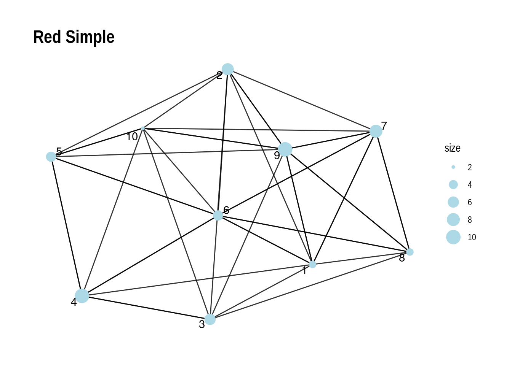
17.2 Personalización de Nodos y Aristas
Podemos personalizar la apariencia de nodos y aristas para transmitir más información.
```{r}
# Añadir más atributos a los nodos y aristas
graph_custom <- graph_simple %>%
activate(nodes) %>%
mutate(community = sample(LETTERS[1:3], 10, replace = TRUE)) %>%
activate(edges) %>%
mutate(weight = runif(gsize(graph_simple)))
# Visualizar la red personalizada
ggraph(graph_custom, layout = "fr") +
geom_edge_link(aes(width = weight, alpha = weight)) +
geom_node_point(aes(color = community, size = size)) +
geom_node_text(aes(label = 1:10), repel = TRUE) +
scale_edge_width(range = c(0.2, 2)) +
scale_edge_alpha(range = c(0.1, 1)) +
theme_graph() +
labs(title = "Red Personalizada")
```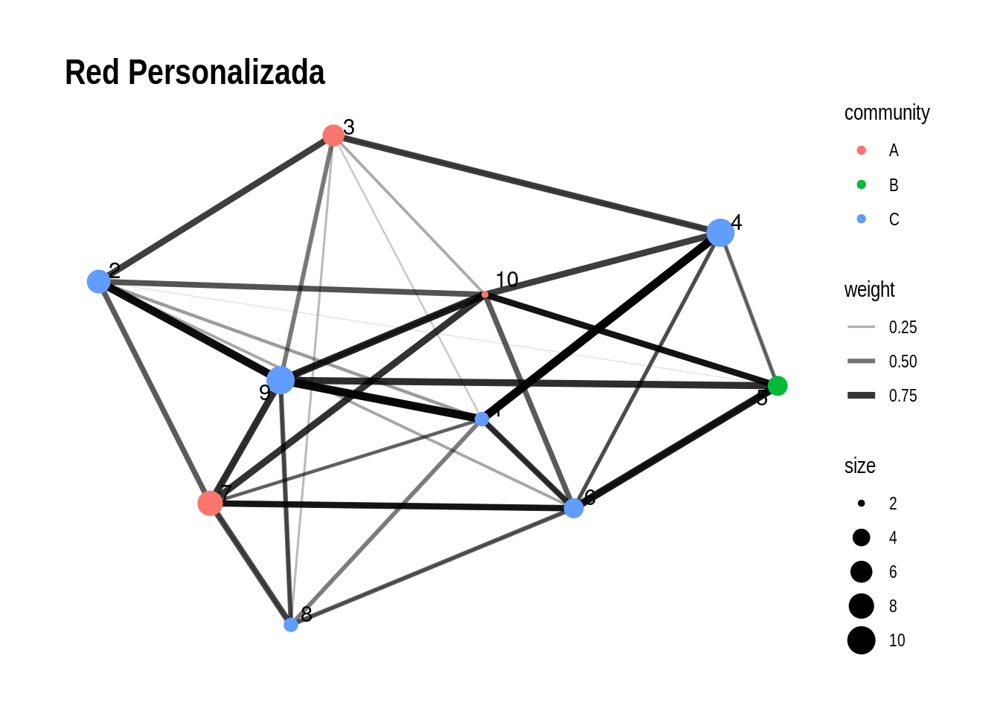
17.3 Redes Multinivel
Las redes multinivel o jerárquicas representan relaciones más complejas entre entidades.
Las redes multinivel consisten en dos o más niveles con diferentes conjuntos de nodos y conexiones intra-nivel. Por ejemplo, un nivel podría ser científicos y sus lazos colaborativos, y el segundo nivel podría ser laboratorios y las conexiones entre ellos, con conexiones inter-nivel representando las afiliaciones de científicos a laboratorios. Para esta sección, utilizaremos el paquete graphlayouts que proporciona algoritmos de diseño avanzados para redes multinivel.
```{r}
# Cargar los datos de ejemplo
data("multilvl_ex")
``````{r}
# Calcular el diseño
xy <- layout_as_multilevel(multilvl_ex, type = "all", alpha = 25, beta = 45)
# Visualizar la red
ggraph(multilvl_ex, "manual", x = xy[, 1], y = xy[, 2]) +
geom_edge_link0(
aes(filter = (node1.lvl == 1 & node2.lvl == 1)),
edge_colour = "firebrick3",
alpha = 0.5,
edge_linewidth = 0.3
) +
geom_edge_link0(
aes(filter = (node1.lvl != node2.lvl)),
alpha = 0.3,
edge_linewidth = 0.1,
edge_colour = "black"
) +
geom_edge_link0(
aes(filter = (node1.lvl == 2 & node2.lvl == 2)),
edge_colour = "goldenrod3",
edge_linewidth = 0.3,
alpha = 0.5
) +
geom_node_point(aes(shape = as.factor(lvl)), fill = "grey25", size = 3) +
scale_shape_manual(values = c(21, 22)) +
theme_graph() +
coord_cartesian(clip = "off", expand = TRUE) +
theme(legend.position = "none") +
labs(title = "Red Multinivel")
```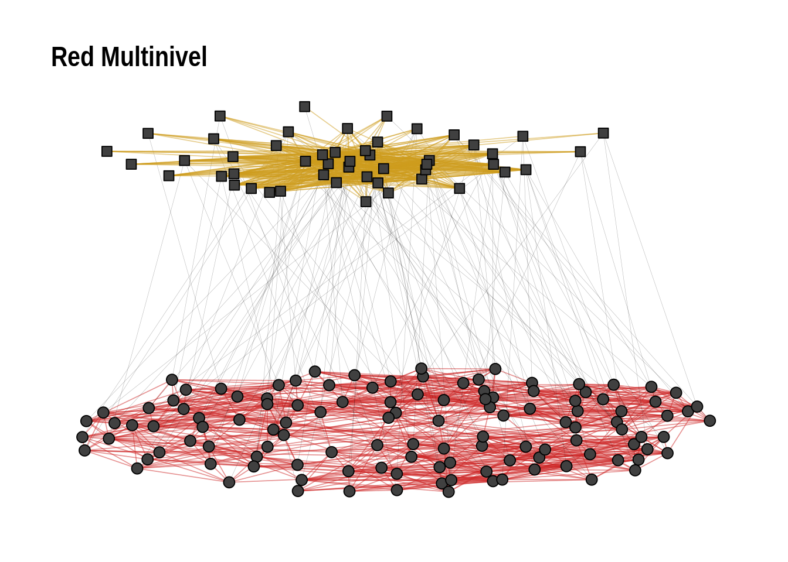
En este gráfico:
Los nodos del nivel 1 se representan como círculos y los del nivel 2 como cuadrados. Las conexiones dentro del nivel 1 son rojas, las del nivel 2 son doradas, y las conexiones entre niveles son negras. Utilizamos geom_edge_link0() para dibujar las aristas, lo que nos permite filtrar y estilizar cada tipo de conexión por separado.
17.4 Redes ego
```{r}
library(egor)
# Crear una red ego usando egor
set.seed(123) # Para reproducibilidad
ego_data <- make_egor(
net.count = 5, # Número de redes ego
max.alters = 10 # Máximo número de alters por ego
)
# Añadir atributos a los alters
ego_data <- ego_data %>%
activate("alter") %>%
mutate(
community = sample(1:3, n(), replace = TRUE),
age = sample(18:70, n(), replace = TRUE)
)
# Añadir pesos a las aristas
ego_data <- ego_data %>%
activate("aatie") %>%
mutate(weight = runif(n(), 0, 1))
# 1. Usar plot_egograms()
plot_egograms(ego_data,
venn_var = "community",
pie_var = NULL,
vertex_size_var = "age",
ego_no = 1:5) # Visualizar las 5 redes ego
# 2. Usar plot_ego_graphs()
plot_ego_graphs(ego_data,
ego_no = 1:5,
x_dim = 2,
y_dim = 3,
vertex_size_var = "age",
vertex_color_var = "community",
edge_width_var = "weight")
# 3. Usar vis_clustered_graphs()
# Primero, creamos los grafos agrupados
clustered_graphs <- clustered_graphs(ego_data, clust.groups = "community")
# Luego, los visualizamos
vis_clustered_graphs(clustered_graphs[1:5], # Visualizar los primeros 5 grafos agrupados
node.size.multiplier = 2,
edge.width.multiplier = 1,
labels = TRUE)
# 4. Usar egor_vis_app() para una visualización interactiva
# Nota: Esto abrirá una aplicación Shiny en tu navegador
#egor_vis_app(ego_data)
```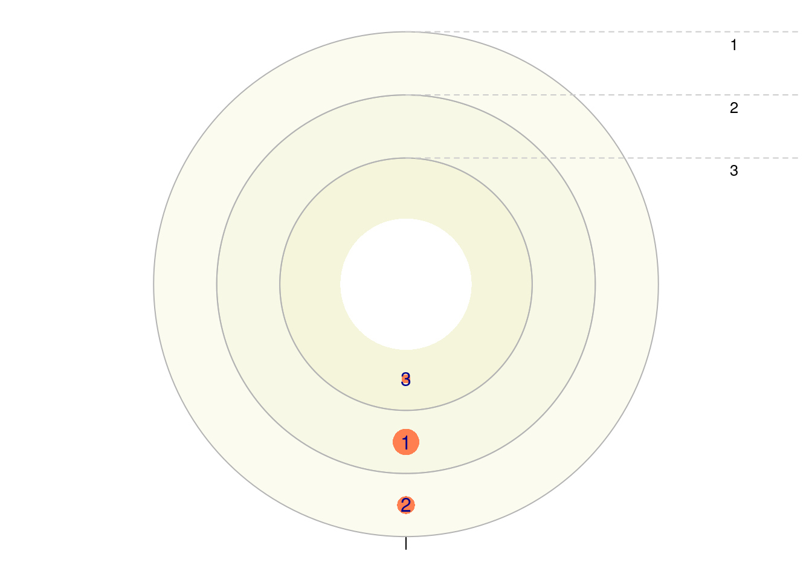
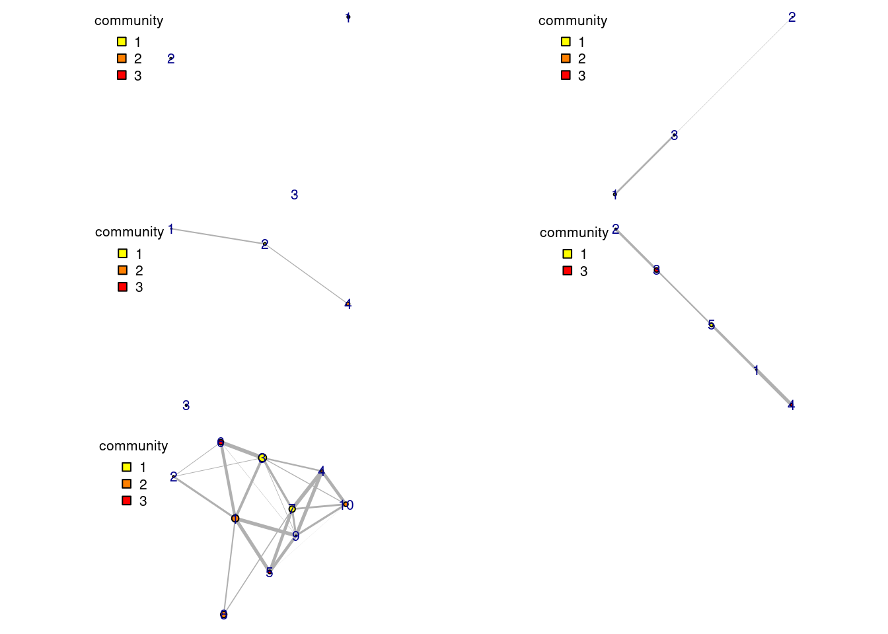
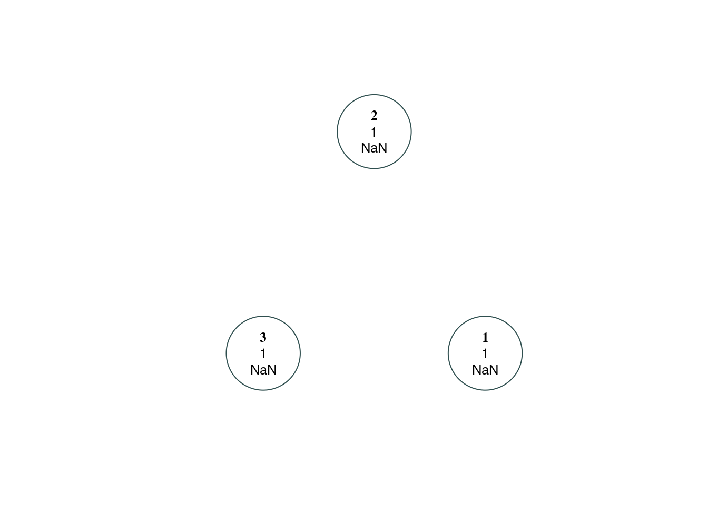
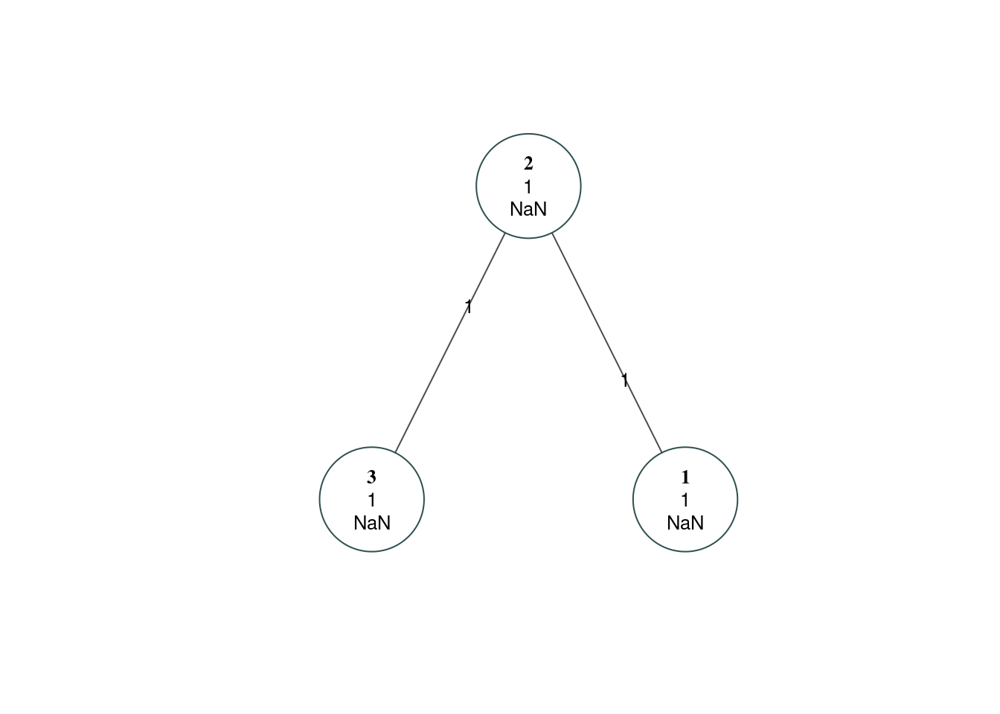
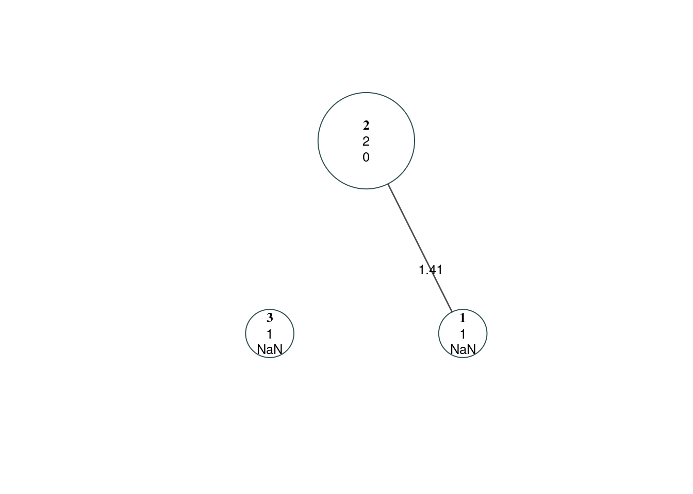
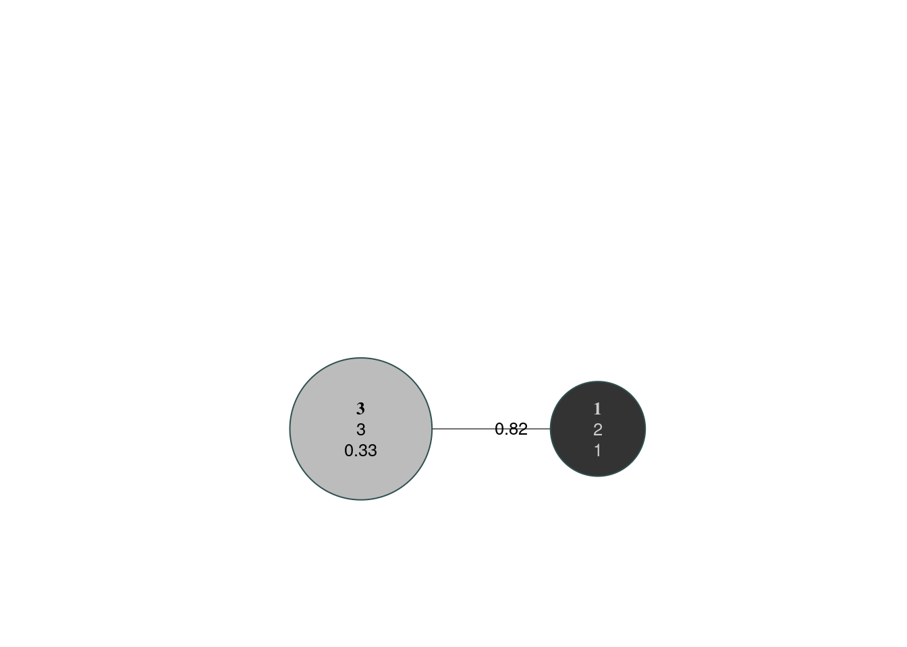